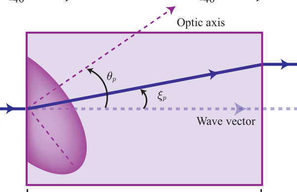
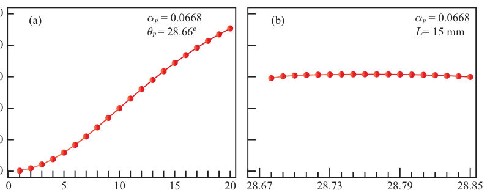
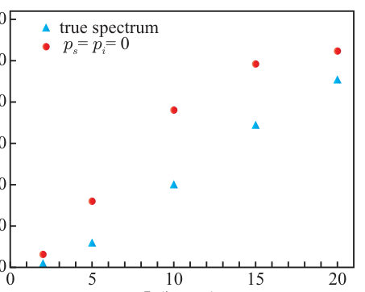
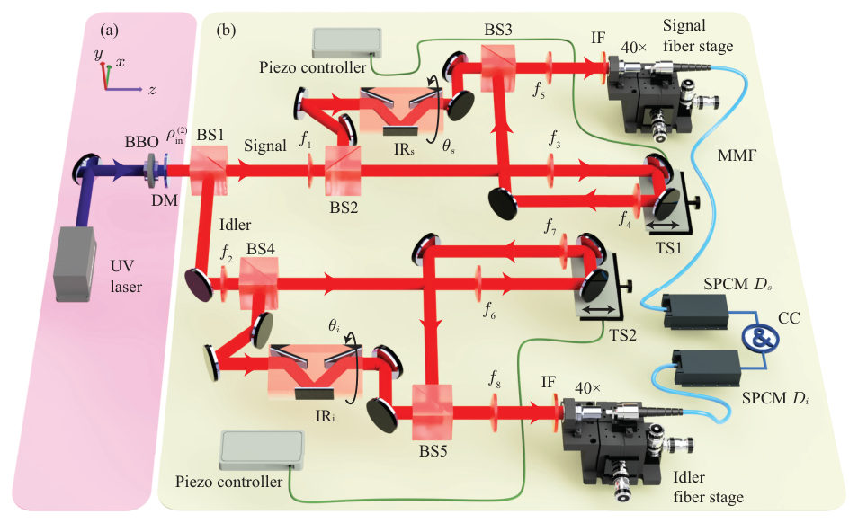
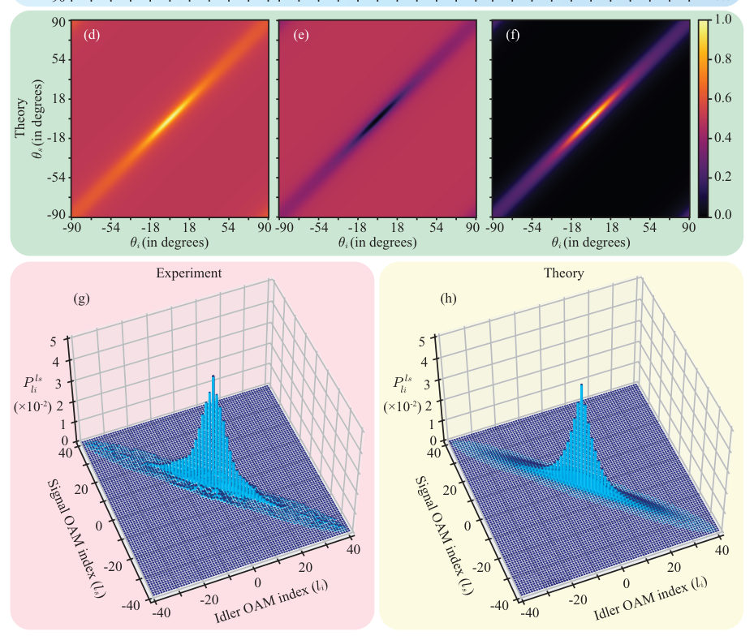
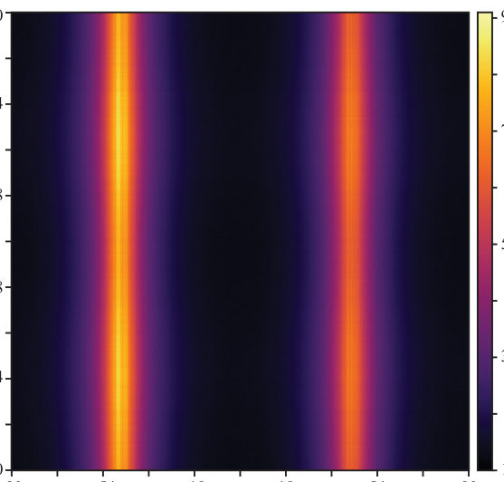
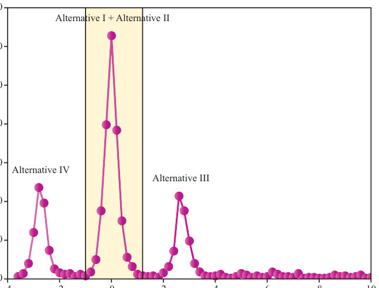
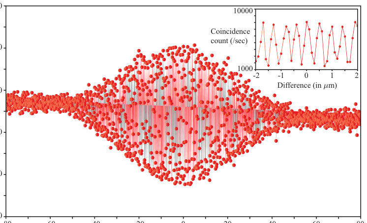

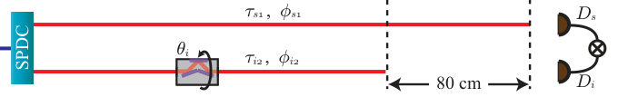
228 papers · 49 relevant · 5 highlighted
Every paper with at least one nonzero topic score, sorted by best-matching score. 🔥 marks scores ≥4/5. Click the title to jump to the full entry below; click [arXiv] to open the paper page. (secondary) marks papers from de-prioritized cond-mat archives.
analog quantum simulation 5/5 · 🔥 exotic spin models in light-matter 4/5 · 🔥 non-equilibrium dynamics 4/5 · entanglement & information structure 3/5 · QC/QI experiment 2/5 · non-equilibrium universality 2/5 · quantum measurements 2/5free-space correlated emission 5/5 · 🔥 Dicke superradiance 4/5 · 🔥 correlated / nonlocal dissipation 4/5 · methods for driven-dissipative 2/5 · non-equilibrium universality 2/5quantum optics experiment 5/5 · 🔥 QC/QI experiment 4/5 · interference shaping light 3/5 · entanglement & information structure 2/5 · quantum measurements 2/5spintronics-quantum-optics interface 5/5 · 🔥 entanglement & information structure 4/5 · Tavis-Cummings & cavity-many-emitter 2/5 · correlated / nonlocal dissipation 2/5QC/QI experiment 5/5 · 🔥 entanglement & information structure 4/5 · quantum measurements 2/5scars & prethermalization 5/5 · entanglement & information structure 3/5 · non-equilibrium dynamics 3/5measurement-induced transitions 4/5 · 🔥 quantum measurements 4/5 · driven-dissipative phase transition 3/5 · non-equilibrium universality 3/5 · Keldysh / 2PI / non-Gaussian methods 2/5 · entanglement & information structure 2/5 · methods for driven-dissipative 2/5 · non-equilibrium dynamics 2/5correlated cavity matter 4/5 · 🔥 entanglement & information structure 4/5 · Keldysh / 2PI / non-Gaussian methods 3/5 · spintronics-quantum-optics interface 3/5 · Tavis-Cummings & cavity-many-emitter 2/5 · analog quantum simulation 2/5 · correlated / nonlocal dissipation 2/5 · exotic spin models in light-matter 2/5non-equilibrium dynamics 4/5 · Kondo & dissipative impurity 3/5 · analog quantum simulation 3/5 · entanglement & information structure 3/5 · Keldysh / 2PI / non-Gaussian methods 2/5 · non-equilibrium universality 2/5non-equilibrium universality 4/5 · Tavis-Cummings & cavity-many-emitter 3/5 · non-equilibrium dynamics 3/5 · analog quantum simulation 2/5 · correlated cavity matter 2/5 · entanglement & information structure 2/5entanglement & information structure 4/5 · 🔥 non-equilibrium dynamics 4/5 · non-equilibrium universality 3/5 · scars & prethermalization 3/5methods for driven-dissipative 4/5 · driven-dissipative phase transition 3/5 · non-equilibrium dynamics 3/5 · correlated / nonlocal dissipation 2/5 · entanglement & information structure 2/5(secondary) — 🔥 quantum optics experiment 4/5 · correlated cavity matter 3/5 · QC/QI experiment 2/5 · Tavis-Cummings & cavity-many-emitter 2/5 · analog quantum simulation 2/5non-equilibrium dynamics 4/5 · methods for driven-dissipative 3/5 · Keldysh / 2PI / non-Gaussian methods 2/5 · driven-dissipative phase transition 2/5 · non-equilibrium universality 2/5correlated / nonlocal dissipation 4/5 · quantum measurements 3/5 · Tavis-Cummings & cavity-many-emitter 2/5 · entanglement & information structure 2/5 · methods for driven-dissipative 2/5Kondo & dissipative impurity 4/5 · 🔥 methods for driven-dissipative 4/5 · non-equilibrium dynamics 3/5 · Keldysh / 2PI / non-Gaussian methods 2/5non-equilibrium dynamics 4/5 · analog quantum simulation 3/5 · methods for driven-dissipative 3/5 · driven-dissipative phase transition 2/5QC/QI experiment 4/5 · 🔥 quantum optics experiment 4/5 · interference shaping light 2/5 · spintronics-quantum-optics interface 2/5quantum measurements 4/5 · correlated / nonlocal dissipation 2/5 · entanglement & information structure 2/5 · methods for driven-dissipative 2/5 · non-equilibrium dynamics 2/5correlated / nonlocal dissipation 4/5 · methods for driven-dissipative 3/5 · entanglement & information structure 2/5 · non-equilibrium dynamics 2/5non-equilibrium dynamics 4/5 · methods for driven-dissipative 3/5 · driven-dissipative phase transition 2/5 · entanglement & information structure 2/5entanglement & information structure 4/5 · 🔥 non-equilibrium dynamics 4/5 · driven-dissipative phase transition 2/5analog quantum simulation 4/5 · 🔥 non-equilibrium dynamics 4/5 · exotic spin models in light-matter 2/5(secondary) — 🔥 QC/QI experiment 4/5 · 🔥 quantum optics experiment 4/5 · interference shaping light 2/5non-equilibrium dynamics 4/5 · non-equilibrium universality 3/5 · Keldysh / 2PI / non-Gaussian methods 2/5correlated / nonlocal dissipation 4/5 · non-equilibrium dynamics 3/5 · methods for driven-dissipative 2/5entanglement & information structure 4/5 · non-equilibrium dynamics 3/5 · spintronics-quantum-optics interface 2/5quantum measurements 4/5 · methods for driven-dissipative 3/5 · non-equilibrium dynamics 2/5quantum optics experiment 4/5 · QC/QI experiment 3/5 · quantum measurements 2/5QC/QI experiment 4/5 · 🔥 quantum optics experiment 4/5entanglement & information structure 4/5 · methods for driven-dissipative 2/5 · quantum measurements 2/5quantum measurements 4/5 · entanglement & information structure 2/5 · non-equilibrium dynamics 1/5entanglement & information structure 4/5 · non-equilibrium dynamics 2/5QC/QI experiment 4/5 · spintronics-quantum-optics interface 2/5QC/QI experiment 4/5 · methods for driven-dissipative 2/5interference shaping light 4/5 · quantum measurements 2/5entanglement & information structure 4/5 · quantum measurements 2/5quantum measurements 4/5 · methods for driven-dissipative 2/5scars & prethermalization 4/5 · non-equilibrium dynamics 2/5interference shaping light 4/5 · non-equilibrium dynamics 2/5analog quantum simulation 4/5 · non-equilibrium dynamics 2/5QC/QI experiment 4/5 · quantum measurements 1/5QC/QI experiment 4/5 · quantum measurements 1/5methods for driven-dissipative 4/5QC/QI experiment 4/5QC/QI experiment 4/5QC/QI experiment 4/5QC/QI experiment 4/5entanglement & information structure 4/5Papers by authors on your watch list. Click the title to jump to the full entry below; click [arXiv] to open the paper page.
Papers from quant-ph and your primary cond-mat archives (quant-gas, stat-mech, str-el, dis-nn). Highlighted papers (⭐) come first, then everything else sorted by topic-relevance score, highest first.
Highlighted author(s): Immanuel Bloch
Authors: Simon Karch, Melissa Will, Irene Prieto Rodriguez, Nikolas Liebster, SeungJung Huh, Michael Knap, Frank Pollmann, Clemens Kuhlenkamp, Immanuel Bloch, Monika Aidelsburger
Type: experiment · Category: quantum gases · PDF: https://arxiv.org/pdf/2604.24744v1
Analysis basis: full PDF text, analyzed in chunks
Topic relevance: 🔥 analog quantum simulation 5/5 · 🔥 exotic spin models in light-matter 4/5 · 🔥 non-equilibrium dynamics 4/5 · entanglement & information structure 3/5 · QC/QI experiment 2/5 · non-equilibrium universality 2/5 · quantum measurements 2/5
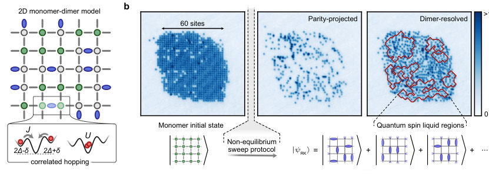
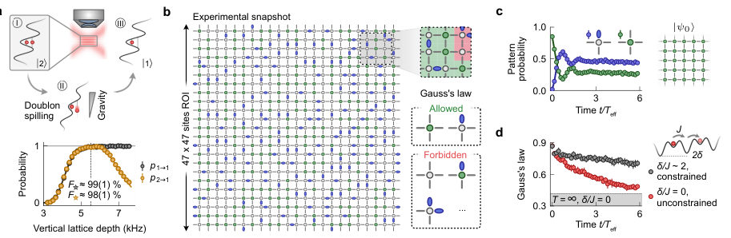
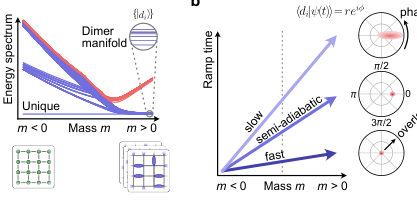
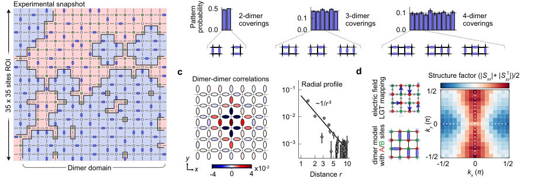
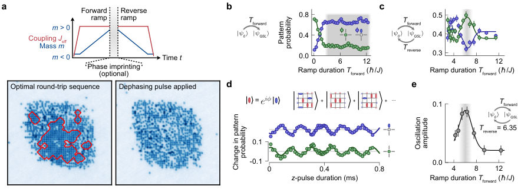
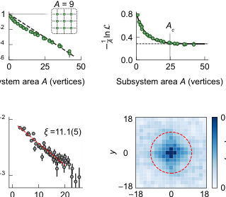
Main problem. The challenge of experimentally preparing and verifying the many-body coherence and emergent gauge structure of U(1) quantum spin liquids, which are otherwise difficult to detect due to their fragile nature.
Main result. The researchers successfully prepared extended regions of U(1) quantum spin liquids using non-equilibrium semi-adiabatic ramps and directly observed large-scale many-body coherence and characteristic pinch-point signatures.
Method. An analogue quantum simulation using a caesium quantum gas microscope with a 2D optical superlattice, employing semi-adiabatic sweeps and round-trip interferometric protocols for coherence detection.
Summary. This paper reports the experimental realization and verification of U(1) quantum spin liquids in a large-scale quantum gas microscope. By using semi-adiabatic ramps, the authors prepare extended regions of the spin liquid and confirm the validity of Gauss's law. They observe hallmark signatures of the U(1) gauge structure, such as pinch points in the structure factor, and use interferometry to prove large-scale many-body coherence. This work establishes non-equilibrium protocols as a vital tool for exploring exotic phases of matter.
Model / system. A large-scale (>3,000 sites) 2D Bose-Hubbard model in a square optical superlattice, which implements an effective 2D monomer-dimer model equivalent to a (2+1)D U(1) lattice gauge theory.
Key observables. Gauss's law validity, real-space dimer-dimer correlations, momentum-space pinch points, and many-body coherence via subsystem return probabilities.
Important parameters / regimes. Tunnel coupling J/h approx 130 Hz, staggered potential delta/J approx 12, on-site interaction U/J approx 24, and effective coupling J_eff.
Assumptions / limitations. The Hamiltonian does not support the target RK wavefunction as its ground state, necessitating a non-equilibrium preparation approach; 2D U(1) QSLs are theoretically unstable to perturbations.
Figures summary. Figure 1 shows the monomer-dimer model and preparation protocol; Figure 2 illustrates the experimental setup and Gauss's law verification; Figure 5 details the round-trip interferometric protocol and phase imprinting; Figure 6 presents monomer-monomer correlations and correlation length estimates.
Paper structure. The paper introduces the problem of QSL preparation, describes the experimental platform and effective gauge theory model, details the non-equilibrium preparation and detection methods, presents results on Gauss's law and gauge signatures, and concludes with a quantification of many-body coherence and spatial scales.
Why it may be interesting. It demonstrates a powerful route for accessing highly-entangled, exotic states via non-equilibrium dynamics that are not accessible in thermal equilibrium, providing a blueprint for simulating gauge theories using ultracold atoms.
Locally constrained gauge theories underpin our understanding of fundamental interactions in particle physics and the emergent behaviour of quantum materials. In strongly correlated systems, they can give rise to quantum spin liquids that lack conventional order and are defined by coherent superpositions of an extensive number of many-body configurations. Realising and probing such exotic states experimentally is an outstanding challenge both in solid-state and synthetic quantum systems, not least due to the difficulty of detecting the fragile coherences between many-body states. Here, we report a large-scale (>3,000 sites) realisation of a two-dimensional U(1) lattice gauge theory with ultracold atoms in a square optical superlattice and demonstrate non-equilibrium preparation of extended regions of U(1) quantum spin liquids. We demonstrate Gauss's law validity in a quench experiment, enabled by a new microscopy technique for detecting doubly occupied sites. We observe characteristic real-space correlations and momentum-space pinch points, hallmarks of the emergent U(1) gauge structure. Using round-trip interferometric protocols, we directly observe large-scale coherence between many-body configurations, providing strong evidence for quantum spin liquid regions extending over ~100 lattice sites. Our results establish non-equilibrium quantum simulation protocols as a powerful route for accessing and probing exotic, highly-entangled states beyond those hosted by the engineered Hamiltonian in thermal equilibrium.
Highlighted author(s): Simon B. Jäger, Ana Asenjo-Garcia
Authors: Cosimo C. Rusconi, Eric Sierra, Wai-Keong Mok, Avishi Poddar, Simon B. Jäger, Ana Asenjo-Garcia
Type: theory · Category: other · PDF: https://arxiv.org/pdf/2604.24680v1
Analysis basis: full PDF text, analyzed in chunks
Topic relevance: 🔥 free-space correlated emission 5/5 · 🔥 Dicke superradiance 4/5 · 🔥 correlated / nonlocal dissipation 4/5 · methods for driven-dissipative 2/5 · non-equilibrium universality 2/5
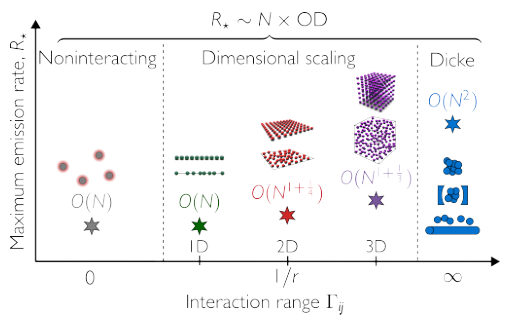
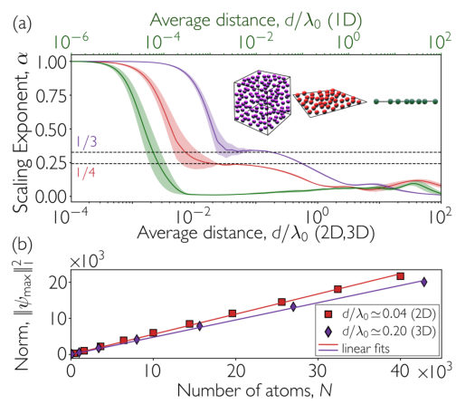
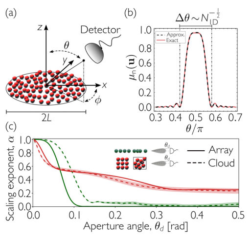
Main problem. Determining the universal scaling laws for the maximum photon emission rate and collective decay in spatially extended, free-space atomic ensembles, across both ordered arrays and disordered clouds.
Main result. The authors derive a universal law where the maximum emission rate scales as the product of the atom number and the system's optical depth (R* ~ N * OD), unifying different dimensionalities and regimes from independent emission to the Dicke limit.
Method. The study uses a mathematical mapping of the maximum decay rate to a ground-state problem of an effective spin Hamiltonian, employing integral operator approximations, Gelfand's formula, and semidefinite programming (SDP) relaxation.
Summary. This paper establishes that the optical depth is the fundamental parameter governing many-body cooperative emission in atomic ensembles. It proves a universal scaling law that applies to both ordered arrays and disordered clouds across 1D, 2D, and 3D geometries. The work also reveals that the observed emission rate depends heavily on the detector's numerical aperture, which can lead to different scaling observations compared to total emission. These findings provide a rigorous benchmark for predicting superradiant behavior in extended atomic systems.
Model / system. Ensembles of N two-level atoms with a resonant dipole transition interacting via a Markovian master equation in free space, including both ordered lattices and disordered clouds in 1D, 2D, and 3D.
Key observables. Maximum emission rate (R*), maximum decay rate (Gamma_max), superradiant lifetime, and directional detection intensity.
Important parameters / regimes. Optical depth (OD), atomic density (rho), dimensionality (D), numerical aperture (NA), and interatomic separation (d/lambda_0).
Assumptions / limitations. Assumes uniform or Gaussian atomic density distributions, large-density/large-system limits (k0L >> 1), and a scalar model for the dissipative interaction kernel.
Figures summary. Plots showing the scaling exponent alpha vs. dimensionality, numerical confirmation of decay rate scaling with detector aperture angle, and comparisons between exact and approximate integral evaluations.
Paper structure. The paper introduces the problem of cooperative emission limits, establishes the universal scaling law via optical depth, extends the derivation to different dimensionalities and geometries, analyzes the impact of detector aperture on observed rates, and validates results via numerical SDP and asymptotic analysis.
Why it may be interesting. It provides a fundamental, unified framework for understanding many-body cooperative effects in realistic, extended systems, bridging the gap between idealized Dicke models and experimental atomic clouds.
Cooperative emission is well understood for idealized symmetric systems, but its limits in spatially extended, free-space ensembles remain an open question. Here, we derive a universal law for the scaling of the maximum photon emission rate with system size that unifies both ordered arrays and disordered atomic clouds in arbitrary dimensions at fixed density. We demonstrate that, for a fixed atomic density, the maximum emission rate scales universally as the product of the atom number and the system's optical depth, with the latter encoding the dimensional scaling across all regimes from independent emission to the Dicke limit. Furthermore, we establish a scaling law for directional detection, revealing that the observed rate depends on the detector's numerical aperture: small apertures yield Dicke-like quadratic scaling, whereas large apertures recover our integrated universal bound. Our results establish optical depth as the parameter governing many-body cooperative emission in both ordered and disordered ensembles, and reveal that directional and total-emission scalings must be carefully distinguished in experimental settings.
Highlighted author(s): Ana Maria Rey
Authors: Conall McCabe, Jamie Boyd, Kaizhao Wang, Martin Lebrat, Cindy Regal, Adam Kaufman, Ana Maria Rey, Lukas Homeier
Type: both · Category: quantum gases · PDF: https://arxiv.org/pdf/2604.22955v1
Analysis basis: full PDF text, analyzed in chunks
Topic relevance: 🔥 analog quantum simulation 4/5 · non-equilibrium dynamics 2/5
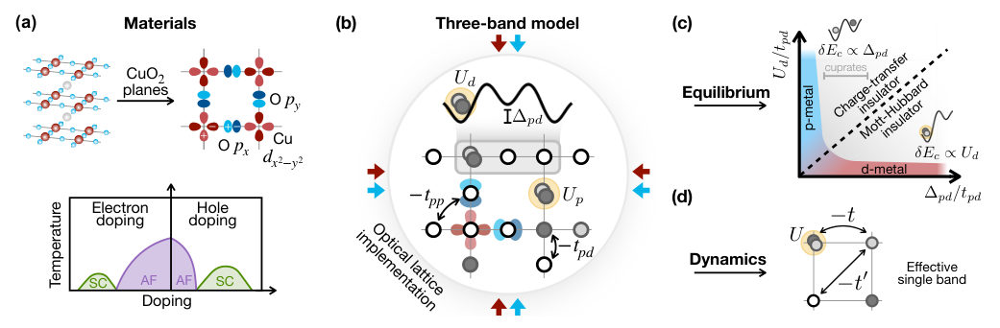
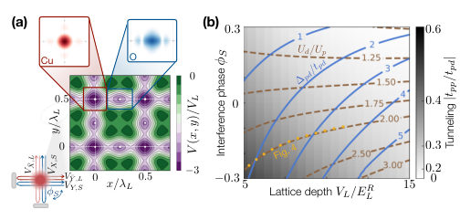
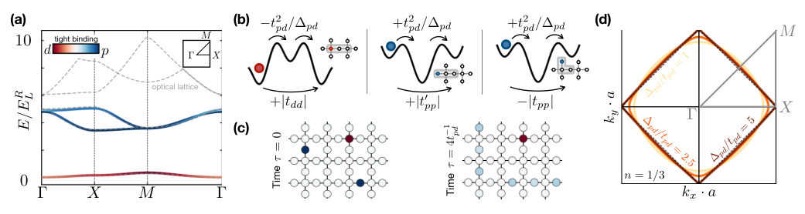
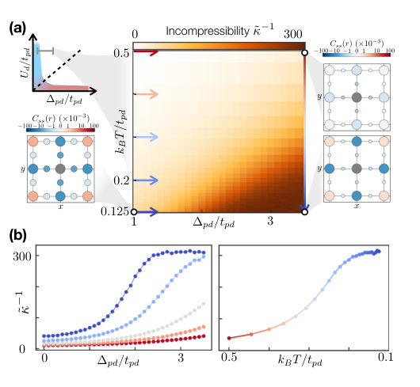
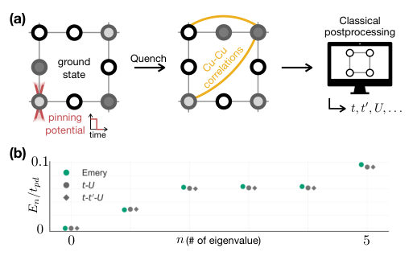
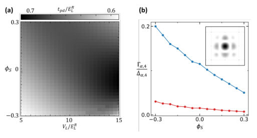
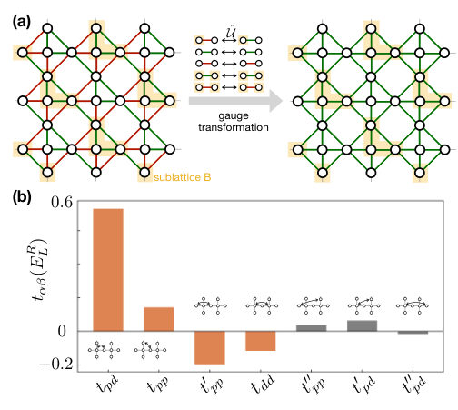
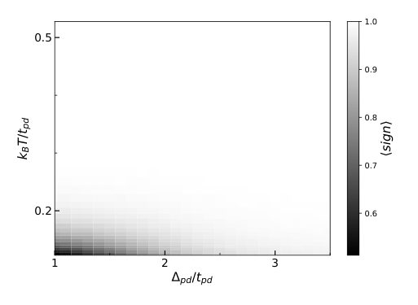
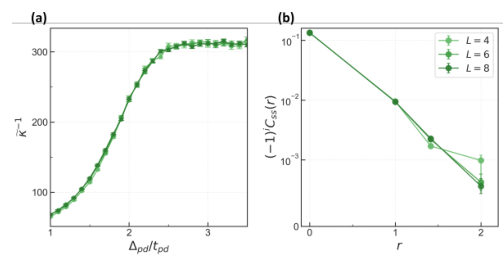
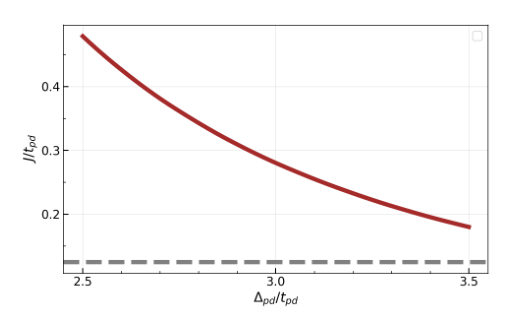
Main problem. The difficulty of simulating the complex multi-orbital physics of cuprate superconductors, specifically the interplay between copper and oxygen orbitals, using simplified one-band Hubbard models in ultracold atom platforms.
Main result. The authors propose an optical superlattice architecture that implements the three-band Emery model, demonstrating that the metal-insulator crossover and antiferromagnetic correlations are experimentally accessible and that effective single-band parameters can be learned via quantum quenches.
Method. The study combines an experimental proposal for a bichromatic optical superlattice with ab initio Wannier function construction, Determinant Quantum Monte Carlo (DQMC) simulations, and a Hamiltonian learning protocol based on quantum quenches.
Summary. This paper proposes a new way to use ultracold atoms to simulate the complex three-band Emery model, which is essential for understanding high-temperature superconductors like cuprates. By using a specialized bichromatic optical lattice, the researchers show how to control copper and oxygen orbital interactions independently. They demonstrate that the key physics, such as the metal-insulator transition, is reachable with current experimental temperatures. Additionally, they introduce a method to learn effective single-band parameters from experimental data, providing a bridge between complex multi-orbital simulations and simpler Hubbard models.
Model / system. A 2D optical superlattice using ultracold fermionic 6Li atoms in a bichromatic (short and long wavelength) lattice that creates a Lieb lattice geometry, implementing a three-band Emery model with Cu (d) and O (p) orbitals.
Key observables. Charge-ordering temperature, antiferromagnetic spin-spin correlations, incompressibility, Fermi surface shape, and effective single-band Hubbard parameters (t, t', U).
Important parameters / regimes. Charge-transfer energy (pd gap) delta_pd, Hubbard interactions Ud and Up, tunneling amplitudes t_pd and t_pp, and the ratio of lattice depths V_S/V_L.
Assumptions / limitations. Assumes that the low-energy physics can be captured by an effective single-band model in the large delta_pd limit and that the 4th band leakage is minimal in the cuprate-relevant regime.
Figures summary. Figure 1 shows the cuprate electronic structure and proposed superlattice; Figure 2 details the bichromatic lattice and parameter accessibility; Figure 3 compares the exact potential to the tight-binding model and shows band structure; Figure 5 illustrates the Hamiltonian learning protocol and spectral agreement; Figure 6 shows the gauge transformation for tunneling signs; Figure 9 shows incompressibility and spin correlations.
Paper structure. The paper introduces the scientific motivation (cuprate physics), proposes the experimental superlattice architecture, provides ab initio parameter extraction via Wannier functions, uses DQMC to investigate thermodynamic properties and phase transitions, presents a Hamiltonian learning protocol for parameter extraction, and concludes with an assessment of experimental feasibility and limitations.
Why it may be interesting. It provides a practical pathway to bridge the gap between ultracold atom simulators and real-world strongly correlated materials by implementing a more realistic multi-orbital model and offering a method to map complex physics back to simpler, interpretable models.
Strongly-correlated electrons in transition-metal oxides give rise to intriguing emergent phenomena, including high-temperature superconductivity in cuprates. While simplified one-band Hubbard models capture some aspects, explicitly describing the interplay of copper and oxygen orbitals -- as in the three-band Emery model -- is essential to capture the full phenomenology of cuprates. Quantum simulators based on ultracold atoms offer a promising route to study such systems in a controlled setting, but realizing realistic multi-orbital Hubbard models remains challenging. Here we propose an optical superlattice architecture that implements the three-band Emery model with ultracold fermions. By combining lattice beams with controllable interference, we engineer orbital degrees of freedom that reproduce key features of the cuprate band structure, while enabling independent control of orbital-dependent interactions and charge-transfer energy. We show that single-particle quantum walks can benchmark the resulting tight-binding model. Using determinant quantum Monte Carlo, we further investigate thermodynamic properties in the undoped regime and find a finite-temperature metal-insulator crossover accompanied by the onset of antiferromagnetic correlations accessible in current experiments. Finally, we apply a Hamiltonian learning protocol enabling to infer effective single-band Hubbard models from experimental realizations of Emery models. Our results provide a practical pathway to simulate multi-orbital Hubbard physics with quantum gas microscopes.
Highlighted author(s): Nathan Cooper
Authors: Benjamin Hopton, Alexander Abbey, David Johnson, Daniele Baldolini, Matt Overton, Nathan Cooper, Joseph Aziz, Richard Howl, Lucia Hackermuller
Type: both · Category: other · PDF: https://arxiv.org/pdf/2604.23221v1
Analysis basis: full PDF text, analyzed in chunks
Topic relevance: QC/QI experiment 2/5 · quantum optics experiment 2/5
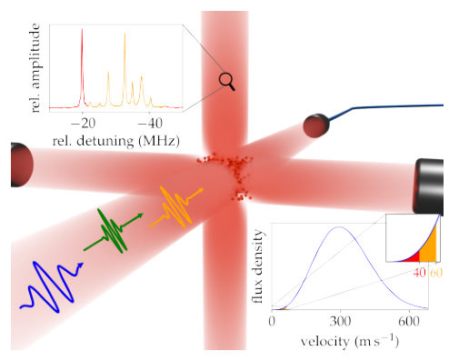
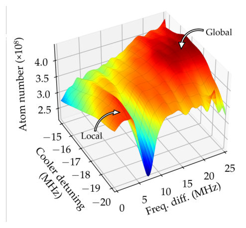
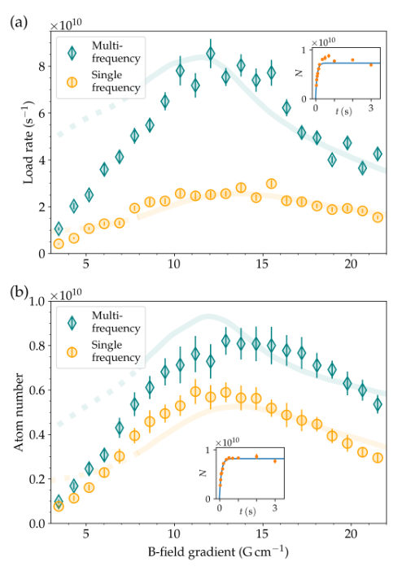
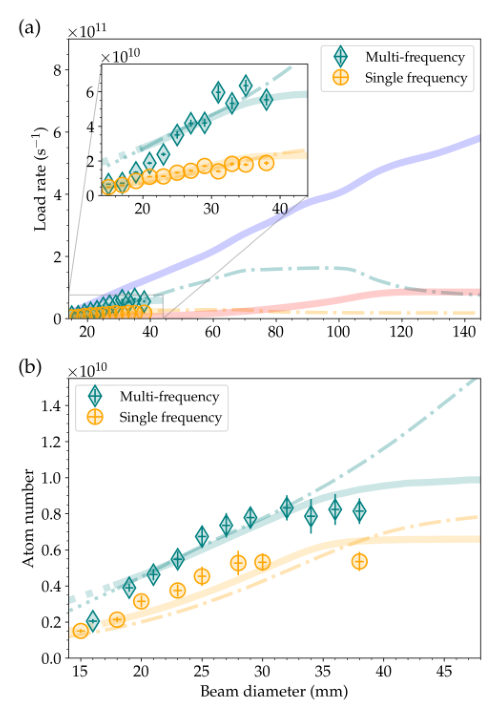
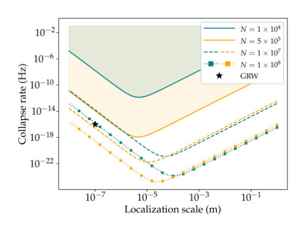
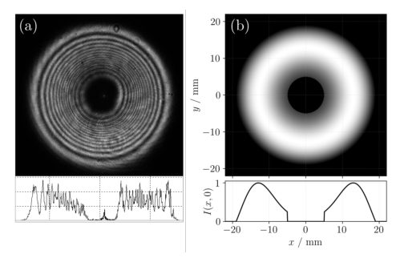
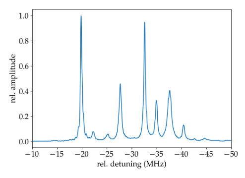
Main problem. The need to increase the atom number and loading rate in Magneto-Optical Traps (MOTs) to improve the sensitivity and bandwidth of quantum technologies and fundamental physics tests.
Main result. Demonstrated that using multi-frequency cooling light can double the steady-state atom number and increase the loading rate by up to a factor of 4 compared to single-frequency MOTs.
Method. The researchers used acousto-optic modulation to create a single-sided multi-frequency spectrum and axicon lenses to create a ring-shaped beam, combined with PyLCP numerical simulations to model atomic deceleration.
Summary. This paper demonstrates a technique to significantly enhance the efficiency of Magneto-Optical Traps by using multiple, closely spaced optical frequencies in the cooling light. By avoiding previous pitfalls like heating and collision-induced losses through specific beam geometries, the authors achieved a fourfold increase in loading rate and a doubling of the steady-state atom number. This method is highly scalable and has direct implications for improving the sensitivity of portable quantum sensors and tests of fundamental physics like dark matter searches.
Model / system. A Rubidium-87 (87Rb) magneto-optical trap utilizing a six-beam configuration with multi-frequency cooling light and a quadrupole magnetic field.
Key observables. Loading rate (R), steady-state atom number (Nss), capture velocity (vc), and loading time constant (tau).
Important parameters / regimes. Frequency detunings, frequency spacing (~5 MHz), magnetic field gradient (up to 22 G/cm), and beam waist radius (15 mm).
Assumptions / limitations. Assumes that the enhancement in MOT atom numbers carries over proportionally to the Bose-Einstein Condensate (BEC) stage.
Figures summary. Fig 1 shows the frequency spectrum and velocity distribution; Fig 2 shows atom number as a function of frequency; Fig 3 compares loading rates and atom numbers vs magnetic gradient; Fig 4 shows predicted gains vs beam diameter; Fig 5 shows projected CSL parameter bounds; Fig 6 compares beam profiles.
Paper structure. The paper introduces the problem of MOT loading efficiency, describes the experimental setup for multi-frequency light generation and beam shaping, presents experimental results for atom number and loading rate, provides numerical simulations to validate and extrapolate results, and discusses applications in quantum sensing and fundamental physics.
Why it may be interesting. This work provides a practical method for scaling up cold-atom sources, which is critical for improving the signal-to-noise ratio in atom interferometry and the precision of quantum-enhanced sensors.
Magneto-optical traps are central to atomic and molecular quantum technologies and precision tests of fundamental physics, where both sensitivity and bandwidth scale strongly with atom number and loading rate. We demonstrate that employing multiple, closely spaced optical frequency components in the cooling light of a $^{87}$Rb magneto-optical trap -- without utilizing any additional slowing techniques -- can double the steady state atom number and increase the loading rate by up to a factor of 4, compared to a conventional single-frequency implementation. Subsequently, we capture up to $1.0(1)\times10^{10}$ atoms with a loading rate of up to $1.3(2)\times 10^{11}\,\mathrm{atoms\,s^{-1}}$ from a thermal background. Numerical simulations reproduce the observed trends and predict substantially larger gains for increased trap sizes beyond our experimental bounds. By re-examining earlier studies of multi-frequency atom capture in the context of modern experimental hardware and emerging applications, we show that previously identified limitations can be avoided and establish multi-frequency cooling as a practical and scalable route to high-flux cold-atom sources. These results have immediate applications in portable atom-based quantum sensing, where higher bandwidth and precision can be achieved without forgoing compactness, and in atom-interferometric tests of fundamental physics, which benefit from access to larger-mass quantum systems.
Highlighted author(s): Johannes Knolle
Authors: Avedis Neehus, Johannes Knolle
Type: theory · Category: strongly correlated electrons · PDF: https://arxiv.org/pdf/2604.24208v1
Analysis basis: full PDF text, analyzed in chunks
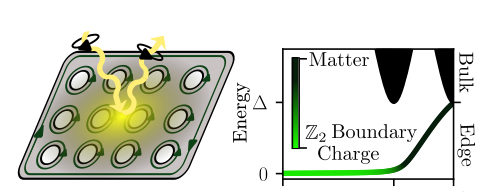
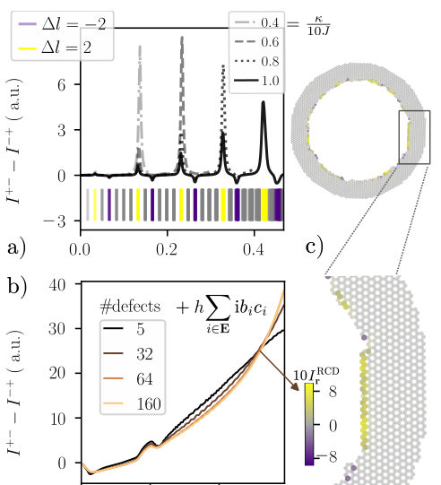
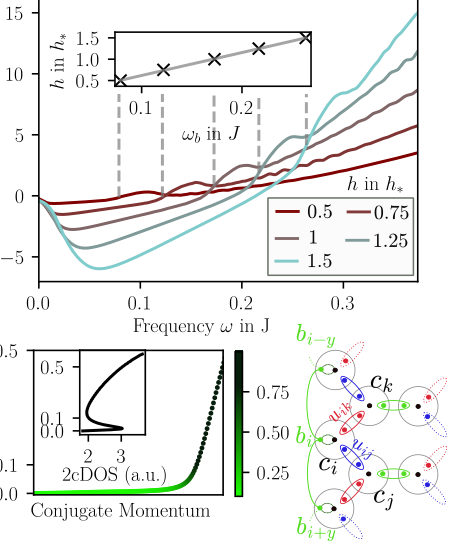
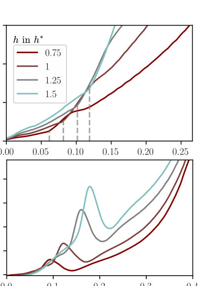
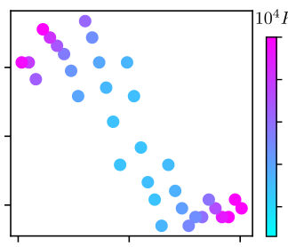
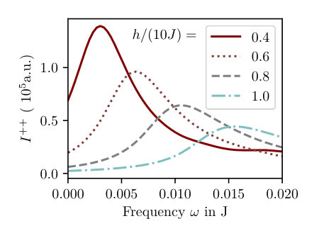
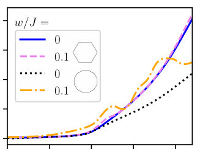
Main problem. The difficulty of identifying and detecting charge-neutral chiral edge modes (CEM) in topological systems like Kitaev spin liquids using Raman spectroscopy, which is typically forbidden by momentum conservation selection rules.
Main result. The authors demonstrate that broken translational symmetry at realistic, curved edges allows for a Raman circular dichroism (RCD) signal that evades selection rules, providing a unique spectroscopic fingerprint of the Kitaev spin liquid phase.
Method. Theoretical calculation of the low-frequency Raman circular dichroism response using the Loudon-Fleury operator and numerical analysis of a punctured disk geometry with disorder averaging.
Summary. This paper proposes a new way to use Raman circular dichroism to detect the elusive chiral edge modes in Kitaev quantum spin liquids. It shows that while these modes are normally Raman-inactive due to momentum conservation, the broken symmetry at real physical edges allows a detectable signal to emerge. The study highlights that the signal's dependence on the Zeeman field and edge geometry serves as a unique fingerprint for the spin liquid phase. This provides a potential experimental roadmap for identifying fractionalized excitations in topological materials.
Model / system. The Kitaev quantum spin liquid (KSL) model on a honeycomb lattice, including effects of an out-of-plane magnetic field (Zeeman field) and boundary-induced symmetry breaking.
Key observables. Raman circular dichroism (RCD), Raman intensity (I++), two-particle density of states (2DOS), and Raman center of energy (RCE).
Important parameters / regimes. Bulk gap (Delta), Zeeman field (h), edge geometry/length scale (L), energy scale (EL), and anisotropy (kappa).
Assumptions / limitations. Neglect of certain non-Kitaev terms on zig-zag edges due to sublattice imbalance; use of the Loudon-Fleury form for non-resonant Raman scattering.
Figures summary. Figure 1 sketches the experimental protocol with nano-structured holes; Figure 2 shows RCD in disorder-free and disordered disks; Figure 4 shows frequency dependence of RCD; Figure 5 illustrates RCE on hexagonal flakes; Figure 6 and 7 show Raman intensity dependence on Zeeman field and geometry.
Paper structure. The paper introduces the problem of detecting CEMs, presents a theoretical framework using the Kitaev model, analyzes the impact of edge geometry and symmetry breaking on Raman selection rules, evaluates the robustness of the signal to disorder, and concludes with the implications for experimental identification of spin liquids.
The identification and manipulation of charge-neutral fractionalized quasi-particles, in particular chiral edge modes (CEM), is a long-standing quest in physics. Remarkably, the microscopically mediated interaction between light and charge-neutral excitations in Mott-Hubbard insulators can take an identical form to the Raman coupling between light and particles with electric charge. However, since CEMs are Raman-inactive due to conservation of lattice momentum, Raman probes have been deemed unsuitable for their identification. Here, using the Kitaev quantum spin liquid (KSL) as an illustrative example, we demonstrate that the long-range correlated disorder inherent to a closed edge can lead to a Raman circular dichroism (RCD) signal that avoids suppression by linear and angular momentum selection rules, and exhibits a dependence on experimentally tunable length and energy scales that are characteristic of CEM. Having calculated the low-frequency RCD response of generic KSL, we argue that the interaction of the chiral matter fermion with the $\Ztwo$ boundary charge leaves a unique fingerprint of the KSL via the anisotropic Zeeman field dependence.
Authors: Suman Karan, Anand K. Jha
Type: both · Category: quantum information and computing · PDF: https://arxiv.org/pdf/2604.23550v1
Analysis basis: full PDF text, analyzed in chunks
Topic relevance: 🔥 quantum optics experiment 5/5 · 🔥 QC/QI experiment 4/5 · interference shaping light 3/5 · entanglement & information structure 2/5 · quantum measurements 2/5









Main problem. The paper investigates the long-standing controversy regarding whether Orbital Angular Momentum (OAM) is conserved during Type-I Spontaneous Parametric Down-Conversion (SPDC).
Main result. The authors experimentally demonstrate OAM non-conservation in Type-I SPDC, attributing the effect to the spatial walk-off of the pump beam in the nonlinear crystal.
Method. The researchers developed a high-sensitivity two-photon OAM detector using a Mach-Zehnder-type interferometer with image rotators and reconstructed the OAM spectrum via a two-dimensional Fourier transform of coincidence visibility.
Summary. This paper reports the experimental observation of Orbital Angular Momentum (OAM) non-conservation in Type-I Spontaneous Parametric Down-Conversion. By developing a high-sensitivity two-photon detector, the authors show that the spatial walk-off effect in BBO crystals causes a spread in the OAM distribution, contrary to the established belief that OAM is conserved in Type-I processes. The study provides a numerical framework to validate these findings and demonstrates that previous claims of conservation were likely due to detector limitations or thin-crystal regimes. This discovery has significant implications for the precision and design of high-dimensional quantum optical technologies.
Model / system. The physical system is a Type-I degenerate SPDC process in a 15-mm thick BBO (beta-barium borate) nonlinear crystal, utilizing a 405 nm continuous-wave UV pump laser.
Key observables. The two-photon OAM spectrum (joint OAM distribution) $P_{l_s, l_i}$, the non-conservation parameter $N$, and coincidence visibility $V_{si}( heta_s, heta_i)$.
Important parameters / regimes. Crystal thickness ($L$), spatial walk-off angle ($\alpha_p$), phase-matching angle ($ heta_p$), and the OAM/radial mode indices ($l, p$).
Assumptions / limitations. The study challenges the standard assumption of OAM conservation ($l_p = l_s + l_i$) in Type-I SPDC and uses a framework that avoids standard phase-matching approximations.
Figures summary. Figure 1 shows numerical plots of OAM distribution spread due to crystal thickness and a conceptual diagram of pump walk-off; Figure 2 shows the increase of non-conservation $N$ with crystal thickness and its independence from the phase-matching angle; Figure 7 and 8 show coincidence counts vs. time delay and the signature of temporal HOM interference.
Paper structure. The paper introduces the OAM conservation controversy, describes the development of a new high-sensitivity detector, presents the experimental setup and OAM spectrum reconstruction method, details the experimental results demonstrating non-conservation, and provides a numerical validation and supplementary technical derivations.
Why it may be interesting. This is highly relevant to quantum optics and photonic quantum information as it challenges a fundamental assumption used in generating high-dimensional entangled states and provides a new high-fidelity method for measuring complex spatial modes.
Orbital angular momentum (OAM)-entangled states produced by spontaneous parametric down-conversion (SPDC) are considered ideal for realizing high-dimensional entangled states, which have several advantages for quantum technologies. However, the limited sensitivity of current two-photon OAM detectors is a major roadblock not only for realizing such technologies but also for resolving foundational questions, such as OAM conservation in SPDC. The current theoretical understanding is that OAM is not conserved in Type-II SPDC but is conserved in Type-I. Experimentally, although non-conservation in TypeII has not been demonstrated, conservation in Type-I has been reported frequently and has become an underlying assumption for techniques generating high-dimensional OAM entangled states. In this work, we experimentally demonstrate a high-sensitivity two-photon OAM detector, using which, contrary to the current understanding, we report non-conservation of OAM in Type-I SPDC. We attribute this to a spatial walk-off effect and prove it using a framework free of standard phase-matching approximations.
Authors: Xiaomin Liu, Rongguo Yang, Jing Zhang, Tiancai Zhang
Type: theory · Category: quantum information and computing · PDF: https://arxiv.org/pdf/2604.23495v1
Analysis basis: full PDF text, analyzed in chunks
Topic relevance: 🔥 spintronics-quantum-optics interface 5/5 · 🔥 entanglement & information structure 4/5 · Tavis-Cummings & cavity-many-emitter 2/5 · correlated / nonlocal dissipation 2/5
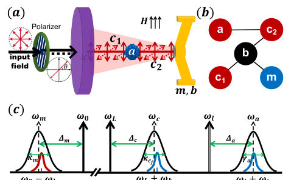
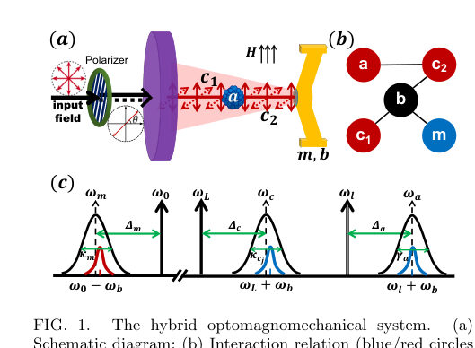
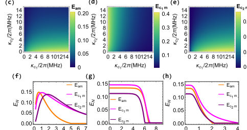
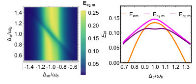
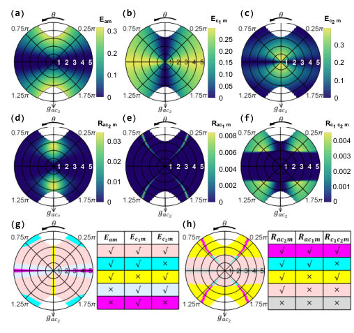
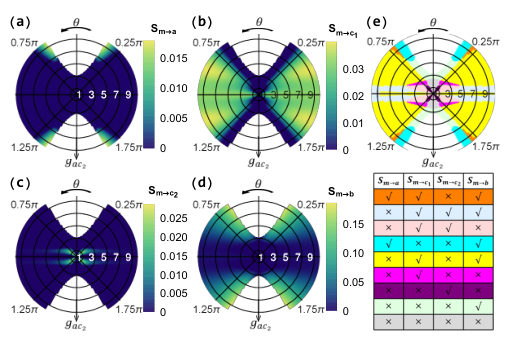
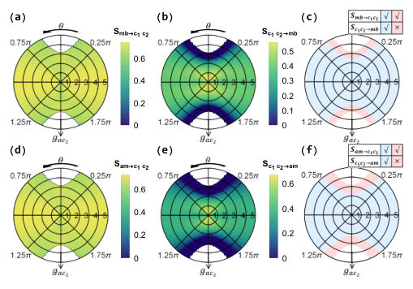
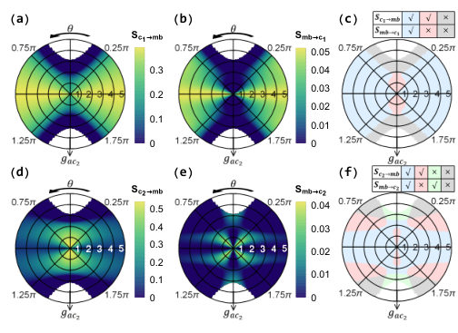
Main problem. The need for flexible and efficient manipulation of diverse quantum correlations (entanglement and steering) to implement various tasks in hybrid quantum networks without physical reconfiguration of hardware.
Main result. The authors demonstrate an all-optical scheme to selectively generate bipartite and tripartite entanglements and deterministically manipulate various types of quantum steering, including collective pentapartite steering, by adjusting laser polarization and coupling strength.
Method. The study uses a linearized Quantum Langevin Equation approach and solves the Lyapunov equation to obtain the system's covariance matrix under a low-excitation, bosonic approximation.
Summary. This paper proposes a scheme to control various quantum correlations in a hybrid optomagnomechanical system using only light polarization. By adjusting the driving laser's polarization angle, the researchers can switch between different types of entanglement and quantum steering, including complex pentapartite steering. The system integrates optical, magnonic, and atomic modes, providing a flexible way to route quantum information. This all-optical approach is experimentally feasible and could be used for advanced quantum communication tasks.
Model / system. A hybrid optomagnomechanical system consisting of an optical cavity with a YIG microbridge, an atomic ensemble, and a polarizer, involving interactions between optical modes, magnon, phonon, and atom modes.
Key observables. Logarithmic negativity (bipartite entanglement), minimum residual contangle (tripartite entanglement), and various steerability coefficients (one-way, two-way, and pentapartite steering).
Important parameters / regimes. Polarization angle (theta), Tavis-Cummings coupling strength (g_ac2), magnomechanical coupling (g_m), optomechanical coupling (g_c), and temperature (T < 4 K).
Assumptions / limitations. Low-excitation approximation for the atomic ensemble, bosonic approximation for atomic polarization, and a Markovian approximation for noise terms.
Figures summary. Figure 1 shows the system schematic and interaction; Figure 6 illustrates tripartite steering regimes (one-way, two-way, no-way) as a function of coupling and polarization; Figure 7 shows quadripartite steering results.
Paper structure. The paper introduces the scientific problem, describes the hybrid optomagnomechanical system and its Hamiltonian, details the mathematical method for calculating correlations, presents results on entanglement and steering manipulation, and concludes with potential applications.
Why it may be interesting. It presents a versatile method for all-optical control of complex, multi-party quantum correlations in a hybrid platform, which is highly relevant for developing scalable quantum networks and secure multi-user communication.
Flexible manipulation of quantum correlation resources enables the implementation of diverse quantum tasks based on hybrid quantum networks, where atom-magnon and optomagnonic entanglements and steerings play important roles. In this work, we propose an effective scheme to generate and manipulate quantum entanglements and steerings based on a hybrid optomagnomechanical system, which is composed of a polarizer, an optical cavity with YIG bridge as one end, and an atomic ensemble in it. According to the results of the parameter dependence of various quantum correlations, we can selectively generate bipartite and genuine tripartite entanglements and deterministically manipulate the concrete situation of bipartite, multipartite steerings, and collective pentapartite steering, by adjusting the polarization direction of the driving laser and the Tavis-Cummings coupling strength. Our all-optical controlled scheme is flexible, convenient, compact, and experimentally feasible, because multiple coupling channels can be tuned simultaneously. This work provides a new perspective for implementing specialized quantum tasks, such as hierarchical ultra-secure multi-user quantum communications.
Authors: Yousef Mafi, Ali G. Moghaddam, Teemu Ojanen
Type: experiment · Category: quantum information and computing · PDF: https://arxiv.org/pdf/2604.24740v1
Analysis basis: full PDF text, analyzed in chunks
Topic relevance: 🔥 QC/QI experiment 5/5 · 🔥 entanglement & information structure 4/5 · quantum measurements 2/5
Main problem. Exploring and verifying high-dimensional, many-body Bell non-locality in a regime where non-locality is collective and hidden from pairwise correlations.
Main result. Demonstrated a high-confidence Bell violation for two 64-dimensional systems using 12 qubits, proving that the non-locality is genuinely collective and not reducible to pairwise entanglement.
Method. Used a superconducting quantum processor to implement both unitary and Dynamic Quantum Fourier Transform (DQFT) circuits, combined with dynamical decoupling and measurement error mitigation.
Summary. This paper reports the experimental observation of high-dimensional, many-body Bell non-locality on a superconducting quantum processor. By using up to 12 qubits to create 64-dimensional systems, the researchers showed that the observed non-locality is a collective phenomenon that cannot be explained by simple pairwise entanglement. They utilized advanced techniques like Dynamic QFT and error mitigation to overcome noise. This work establishes a new way to certify the complex, multi-qubit correlations essential for large-scale quantum computing.
Model / system. A 156-qubit IBM superconducting quantum processor (ibm aachen) using fixed-frequency transmon qubits in a heavy-hex lattice architecture.
Key observables. CGLMP inequality parameter (I_Z,d^ZG), p-values for LHV models, and CHSH inequality for pairwise analysis.
Important parameters / regimes. System dimensions up to d=64, 12-qubit partitions, and gate fidelities (single-qubit >99.9%, two-qubit >99%).
Assumptions / limitations. The communication loophole is not addressed as the experiment is performed on a single chip; assumes the validity of the null hypothesis for p-value calculation.
Figures summary. Fig 1 shows the Bell test schematic, circuit implementations (QFT vs DQFT), and p-values. Fig 2 illustrates single-qubit perturbation analysis. Fig 3 shows pairwise correlation analysis. Fig 4 compares resource requirements (depth/gate counts). Fig 5 shows p-value scaling with measurement trials.
Paper structure. The paper introduces the problem of high-dimensional many-body non-locality, describes the experimental platform and circuit techniques (DQFT, error mitigation), presents the results of Bell violations and collective nature proofs, and concludes with a discussion on scalability and hardware benchmarking.
Why it may be interesting. It demonstrates a new regime of 'hidden' non-locality that emerges only through collective many-body correlations, providing a powerful new method for benchmarking the performance of large-scale quantum processors.
Combining recent advances in superconducting quantum hardware, we explore quantum correlations in a previously inaccessible regime by observing \emph{simultaneously} high-dimensional and many-body Bell non-locality. We report a high-confidence Bell violation in the correlations between two $d=64$-dimensional systems encoded in twelve qubits. For system sizes up to $d=32$, the strength of the observed nonlocal correlations exceeds the quantum upper bound for $d=2$ systems, providing direct evidence of high-dimensional nonlocality. Furthermore, we demonstrate that the observed violation is genuinely collective: all qubits contribute to the nonlocal correlations, while most pairwise correlations across the bipartition remain Bell-local. Our work illustrates how present-day quantum processors enable the exploration of fundamental predictions of quantum mechanics in previously inaccessible regimes and, in turn, how fundamental quantum effects can be used to benchmark their performance.
Authors: Jianlong Fu, Hoi Chun Po
Type: theory · Category: statistical mechanics · PDF: https://arxiv.org/pdf/2604.23659v1
Analysis basis: full PDF text, analyzed in chunks
Topic relevance: 🔥 scars & prethermalization 5/5 · entanglement & information structure 3/5 · non-equilibrium dynamics 3/5
Main problem. The paper seeks a general organizing principle for Hilbert space fragmentation (HSF), which is the breaking of ergodicity into many decoupled Krylov subspaces in isolated quantum many-body systems.
Main result. The authors introduce the 'peak-valley (PV) fragmentation' mechanism, a local rule where emergent quantum numbers (heights and depths of peaks/valleys in a geometric representation) protect subspaces, allowing for the systematic construction of new fragmented models.
Method. The study uses a duality transformation between domain-wall particles and bosonic charges, a geometric representation of spin states as polyline graphs, and numerical simulations of entanglement entropy and Krylov sector dimensions.
Summary. This paper proposes a new mechanism called 'peak-valley fragmentation' to explain why certain quantum systems fail to thermalize. By mapping spin chains to geometric paths, the authors show that local rules can protect the heights and depths of peaks and valleys, creating many disconnected sectors in the Hilbert space. This framework unifies several known models and provides a recipe for constructing new, highly fragmented higher-spin models. The work also explores how this mechanism extends to higher dimensions and relates to fractal structures.
Model / system. One-dimensional integer spin chains, specifically spin-1 and spin-2 domain-wall particle (DP) models, including the t-Jz model, H3 model, and the embedded Fredkin model.
Key observables. Entanglement entropy (spatial and temporal), Krylov subspace dimensions, entropy of fragmentation, and emergent quantum numbers (peak/valley heights).
Important parameters / regimes. Spin magnitude (F or S), number of particles (q) in the bond operator, and local boson occupation numbers.
Assumptions / limitations. The analysis focuses on isolated, disorder-free systems and relies on the validity of the DP-charge duality in 1D.
Figures summary. Figure 1 shows the DP-charge duality and core subspace; Figure 2 displays geometric path representations; Figure 3 illustrates the relationship between DP and bosonic charge spaces; Figure 4 compares transitions in different models (t-Jz, H3, H4, Motzkin); Figure 6 shows entanglement entropy heatmaps; Figure 9 shows the embedded Fredkin model and core subspace.
Paper structure. The paper begins by introducing the problem of HSF, then proposes the PV mechanism via a geometric representation and duality. It demonstrates the unification of existing models, generalizes the mechanism to higher-spin systems, explores higher-order fragmentation in the embedded Fredkin model, and concludes with extensions to 2D/3D systems and mathematical justifications.
Why it may be interesting. This is highly relevant for many-body dynamics as it provides a new, systematic way to understand and engineer non-ergodic, non-thermalizing quantum phases and the emergence of local conservation laws.
Ergodicity breaking in isolated systems has emerged as an important frontier in the study of quantum many-body physics. While generic Hamiltonians are expected to obey the eigenstate thermalization hypothesis (ETH), recent studies on Hilbert space fragmentation (HSF) have revealed possible robust nonthermal behavior even in disorder-free systems. Although numerous models exhibiting strong HSF are already known, existing analyses are typically model dependent, and a general organizing principle remains elusive. In this work, we introduce a simple mechanism for achieving strong HSF in one-dimensional integer spin chains, which we term "peak-valley (PV) fragmentation". The key idea is to devise a simple local rule which ensures the spin states in the computational basis can be labeled by a set of emergent good quantum numbers corresponding to the heights and depths of alternating peaks and valleys in a geometrical representation. We demonstrate that some known examples of strong HSF models, as well as their variants which break the HSF property, can be understood within the framework of PV fragmentation. Our approach also enables systematic construction of new fragmented models in higher-spin systems, and allows us to identify higher-order HSF models.
Authors: Kay Joerg Wiese, Alapan Das, Adam Nahum
Type: theory · Category: statistical mechanics · PDF: https://arxiv.org/pdf/2604.23346v1
Analysis basis: full PDF text, analyzed in chunks
Topic relevance: 🔥 measurement-induced transitions 4/5 · 🔥 quantum measurements 4/5 · driven-dissipative phase transition 3/5 · non-equilibrium universality 3/5 · Keldysh / 2PI / non-Gaussian methods 2/5 · entanglement & information structure 2/5 · methods for driven-dissipative 2/5 · non-equilibrium dynamics 2/5
Main problem. Investigating the Bayesian phase transition in the critical Ising model, where the precision of local measurements drives a transition between weak and strong measurement phases.
Main result. The study identifies an emergent enlarged replica symmetry (G_n+) in the infrared that fixes the exact value of the Edwards-Anderson correlator exponent and demonstrates the existence of multiscaling at the critical point.
Method. The authors use epsilon expansion around the upper critical dimension (d=6) at two-loop order, non-perturbative renormalization group (NPRG) analysis, and 2D Monte Carlo simulations.
Summary. This paper explores how the precision of measuring bond energies in a critical Ising model can trigger a phase transition between a weak-measurement and a strong-measurement phase. Using both high-dimensional epsilon expansions and 2D numerical simulations, the authors reveal that an enlarged replica symmetry emerges in the infrared limit. This symmetry is powerful enough to fix certain critical exponents exactly. The findings also demonstrate that the system exhibits multiscaling behavior at the critical point.
Model / system. The system is the critical Ising model subject to noisy measurements of bond energies (Gaussian or binary protocols), described by a replica field theory with spin and overlap fields.
Key observables. Edwards-Anderson correlator, conditioned correlation functions, multiscaling exponents, and the overlap matrix.
Important parameters / regimes. Measurement precision (Gamma), spatial dimensionality (d), number of replicas (n), and the coupling ratio (J/Gamma).
Assumptions / limitations. The analysis assumes the existence of a stable renormalization group fixed point and focuses on the n -> 1 replica limit.
Figures summary. Figures include the coordinates of the fixed point in the epsilon-expansion plane, NPRG eigenvalues and couplings, and finite-size scaling estimates of multiscaling exponents.
Paper structure. The paper introduces the Bayesian measurement problem, develops the replica field theory and symmetry analysis, performs epsilon expansion and NPRG calculations, presents 2D numerical simulation results, and discusses long-range interaction extensions.
Why it may be interesting. The emergence of enlarged symmetry from measurement-induced disorder and the study of how information extraction affects critical properties are highly relevant to understanding the impact of monitoring on many-body dynamics and quantum phase transitions.
A process that images or measures bond energies in the critical Ising model can be in distinct measurement ``phases'', depending on the precision of measurement. We study the transition into the strong-measurement phase using replica field theory (an epsilon expansion around six dimensions) and numerical simulations in two dimensions. The results reveal multiscaling of correlation functions at the critical point, and a striking enlarged symmetry of the replica description. This is an analog of the Nishimori phenomenon in the Ising spin glass, in a distinct replica limit. The enlarged symmetry is present microscopically for certain measurement protocols, but more generally can emerge in the infrared, and it fixes the exact value of the exponent for the Edwards-Anderson correlator both in 2D and near the upper critical dimension. We also examine the epsilon expansion for models with power-law interactions and/or long-range measurement.
Authors: Facundo Arreyes, Federico Escudero, Arián Gorza, Sebastián Ardenghi
Type: theory · Category: other · PDF: https://arxiv.org/pdf/2604.23673v1
Analysis basis: full PDF text, analyzed in chunks
Topic relevance: 🔥 correlated cavity matter 4/5 · 🔥 entanglement & information structure 4/5 · Keldysh / 2PI / non-Gaussian methods 3/5 · spintronics-quantum-optics interface 3/5 · Tavis-Cummings & cavity-many-emitter 2/5 · analog quantum simulation 2/5 · correlated / nonlocal dissipation 2/5 · exotic spin models in light-matter 2/5
Main problem. Investigating the generation and control of momentum-space pseudospin entanglement between two Dirac quasiparticles in a double-layer honeycomb lattice coupled via a microcavity.
Main result. The study identifies a regime where self-energy renormalization drives a crossover to strong entanglement enhancement, potentially enabling the generation of Bell-like states, provided the quasiparticle coherence time exceeds the photon propagation time.
Method. The authors use a (1+2)D QED framework, applying the Bethe-Salpeter equation within the ladder approximation and a Born-level treatment to calculate the first-order correction to the two-body wave function.
Summary. This paper explores how a microcavity can mediate entanglement between electrons in two layers of Dirac materials. By using a (1+2)D QED model, the authors show that while entanglement is low in simple perturbative regimes, accounting for self-energy effects leads to a significant boost in entanglement. They identify specific kinematic conditions and coherence requirements necessary to achieve Bell-like states. This provides a roadmap for using cavity-mediated interactions to engineer quantum information resources in 2D materials.
Model / system. A double-layer of honeycomb lattice materials (like silicene or germanene) embedded in a planar electromagnetic microcavity, where low-energy excitations are modeled as massive Dirac fermions interacting via virtual photon exchange.
Key observables. Momentum-resolved von Neumann entanglement entropy (pseudospin/sublattice entanglement).
Important parameters / regimes. Fermi velocity, spin-orbit coupling (effective mass), interlayer distance, cavity mode structure, and the ratio of quasiparticle coherence time to photon propagation time.
Assumptions / limitations. The study assumes a single valley, neglects interval valley scattering, uses a phenomenological approach for self-energy dressing, and employs the ladder approximation for photon exchange.
Figures summary. Figure 1 shows the theoretical setup and interaction channels; Figure 2 demonstrates convergence tests for mode cutoffs; Figure 3 illustrates entanglement entropy as a function of interlayer distance showing enhancement due to self-energy.
Paper structure. The paper begins by defining the Dirac field and cavity photon propagator, moves to the Bethe-Salpeter framework for the two-body state, calculates the reduced density matrix, and concludes with a discussion on the regimes of entanglement enhancement and suppression.
Why it may be interesting. It bridges cavity QED and condensed matter by showing how vacuum-mediated interactions and self-energy effects can be engineered to create high-quality entanglement resources in solid-state systems.
We investigate the momentum-space entanglement between two Dirac quasiparticles in a double-layer honeycomb lattice coupled via a planar electromagnetic cavity. We model the low-energy excitations as massive Dirac fermions in $(1+2)$ dimensions and derive the Bethe-Salpeter equation using the ladder approximation. We use a Born-level approximation around a free two-body quasiparticle state, where the interaction is mediated by the cavity photon propagator. From the reduced sublattice density matrix, we compute a momentum-resolved von Neumann entropy. Within the perturbatively controlled regime, the entropy remains small, while phenomenological self-energy dressing drives a crossover to strong enhancement of the entanglement entropy. Stationary entanglement is obtained only when the quasiparticle coherence time exceeds the photon propagation time between the layers. The maximum-entropy regime appears to be a viable method for achieving Bell-like states. These results demonstrate how self-energy renormalization, virtual particle exchange, and spinor geometry combine to reshape the entanglement landscape of Dirac materials.
Authors: André Becker, Georgios M. Koutentakis, Peter Schmelcher
Type: theory · Category: quantum gases · PDF: https://arxiv.org/pdf/2604.23785v1
Analysis basis: full PDF text, analyzed in chunks
Topic relevance: 🔥 non-equilibrium dynamics 4/5 · Kondo & dissipative impurity 3/5 · analog quantum simulation 3/5 · entanglement & information structure 3/5 · Keldysh / 2PI / non-Gaussian methods 2/5 · non-equilibrium universality 2/5
Main problem. Investigating the non-equilibrium, real-time dynamics of core-hole excitations in a one-dimensional fermionic system following an interaction quench.
Main result. Deep core holes are found to be significantly more robust against refilling than bulk or edge vacancies, with the dynamics governed by a competition between impurity-bath mixing and demixing.
Method. The study uses two ab initio approaches: the Multi-Layer Multi-Configuration Time-Dependent Hartree (ML-X) method and a multi-channel Born-Oppenheimer (MCBO) framework.
Summary. This paper studies how a vacancy (hole) in a 1D Fermi sea behaves when a heavy impurity is suddenly introduced via an interaction quench. The researchers found that holes located at the center of the trap (core holes) are much more stable and resistant to being refilled by other particles than holes at the edges. The study also shows how the impurity's mass and the strength of the interaction drive the buildup of many-body entanglement and the mixing or demixing of the species.
Model / system. A 1D system consisting of a spin-polarized Fermi bath and a single heavy mobile impurity in harmonic traps, interacting via a delta-function contact potential.
Key observables. One-body densities, impurity center-of-mass motion, von Neumann entropy, and orbital occupation dynamics (hole refilling).
Important parameters / regimes. Interaction strength (g), mass imbalance (m_I/m_B), impurity confinement (omega_I), and initial hole position (core, bulk, or edge).
Assumptions / limitations. The interaction is modeled as a delta-function contact potential, and intraspecies interaction in the bath is excluded due to the Pauli principle.
Figures summary. Figure 1 shows the experimental setup and initial/dynamic states; Figure 6 displays impurity center-of-mass trajectories; Figure 7 shows von Neumann entropy evolution; Figure 9 demonstrates the convergence of the MCBO method.
Paper structure. The paper introduces the core-hole problem, presents the ML-X and MCBO theoretical frameworks, analyzes the post-quench density and motion dynamics, explores entanglement growth, and concludes with a convergence study of the numerical methods.
Why it may be interesting. It provides a controlled theoretical route to probe orthogonality response, correlation buildup, and real-time hole refilling in many-body systems, which is highly relevant for experiments in quantum gas microscopes.
We investigate the nonequilibrium dynamics of core-hole excitations in a one-dimensional fermionic few-body system consisting of a spin-polarized Fermi bath coupled to a single heavy mobile impurity. The bath is initially prepared in a particle-hole configuration by emptying a selected bath single-particle orbital, while the impurity is displaced with respect to the center of the bath confinement potential. The quench dynamics are initialized by suddenly switching on the impurity-bath interaction. To resolve the resulting dynamics, we combine two complementary \textit{ab initio} approaches, namely the Multi-Layer Multi-Configuration Time-Dependent Hartree method for mixtures and a multi-channel Born-Oppenheimer framework. We show that the postquench response is governed by the interaction strength, impurity confinement, mass imbalance, and the location of the initially prepared hole within the Fermi sea. The density evolution and impurity center-of-mass motion reveal a competition between mixing and demixing of impurity and bath, while the von Neumann entropy demonstrates the buildup of pronounced many-body correlations. Most importantly, the occupation dynamics of the initially emptied orbital identifies deep core holes as substantially more robust against refilling than bulk or edge vacancies. Our results establish core-hole excitations as robust dynamical many-body features in trapped ultracold fermions and provide a controlled route towards probing orthogonality response, correlation buildup, and hole refilling in real time.
Authors: Jiong Li, Jun-ling Wang, Qing-Hu Chen, Hai-Qing Lin
Type: theory · Category: other · PDF: https://arxiv.org/pdf/2604.23164v1
Analysis basis: full PDF text, analyzed in chunks
Topic relevance: 🔥 non-equilibrium universality 4/5 · Tavis-Cummings & cavity-many-emitter 3/5 · non-equilibrium dynamics 3/5 · analog quantum simulation 2/5 · correlated cavity matter 2/5 · entanglement & information structure 2/5
Main problem. Determining whether the 'spectral collapse' in the two-photon quantum Rabi model (tpQRM) constitutes a genuine continuous quantum phase transition and identifying the energy scale that governs its criticality.
Main result. The authors show that spectral collapse in the anisotropic tpQRM is a genuine continuous quantum phase transition governed by a single soft-mode energy gap within the same parity, placing it in the same universality class as the standard QRM.
Method. The study employs the Adiabatic Approximation (AA), exact diagonalization, and perturbation theory, alongside the Kibble-Zurek mechanism to analyze nonequilibrium dynamics.
Summary. This paper resolves the long-standing debate regarding whether spectral collapse in the two-photon Rabi model represents a true quantum phase transition. By identifying a specific 'soft-mode' gap within the same parity sector, the authors demonstrate that the system follows universal scaling laws similar to the standard Rabi model. The study extends these findings to nonequilibrium regimes, showing that the Kibble-Zurek mechanism accurately describes the system's dynamics during a parameter quench. This establishes spectral collapse as a viable way to realize and study quantum criticality in few-body systems.
Model / system. An anisotropic two-photon quantum Rabi model (tpQRM) consisting of a two-level system (qubit) coupled to a single quantized bosonic mode with $Z_4$ symmetry.
Key observables. Atomic polarization, photon number, Quantum Fisher Information (QFI), quadrature fluctuations, and residual energy following a quench.
Important parameters / regimes. Coupling strength (g), critical coupling (gc), anisotropy parameter (r), qubit frequency (delta), and quench time (tau_q).
Assumptions / limitations. The Adiabatic Approximation is assumed to be asymptotically exact near the critical line; the system is initially prepared in the ground state for quench dynamics.
Figures summary. Figure 3 shows Wigner phase-space distributions of the ground state, including squeezed states; Figure 4 illustrates the universal Kibble-Zurek scaling of residual energy as a function of quench time.
Paper structure. The paper first defines the model and the problem of spectral collapse, then uses the Adiabatic Approximation to identify the soft-mode energy scale, followed by an analysis of equilibrium observables and universality, and concludes with an investigation of nonequilibrium dynamics via the Kibble-Zurek mechanism.
Why it may be interesting. It provides a theoretical bridge between few-body spectral collapse and many-body quantum criticality, offering an experimentally accessible platform for studying universal scaling and quantum phase transitions without needing the thermodynamic limit.
Spectral collapse in the two-photon quantum Rabi model (tpQRM) has long been regarded as incompatible with quantum criticality due to the absence of a vanishing excitation gap. We show that, in the anisotropic tpQRM, spectral collapse constitutes a genuine continuous quantum phase transition governed by a single soft mode. The excitation gap within the same parity closes as $ε_{sp} \sim |g - g_c|^{zν}$ with $zν= 1/2$, placing the system in the same universality class as the standard QRM, while the gap between different parities reflects symmetry-induced level splitting rather than a critical excitation. This soft mode defines a unique energy scale that controls both equilibrium and nonequilibrium properties, including macroscopic observables, quantum Fisher information, and Kibble-Zurek dynamics. These results establish spectral collapse as an experimentally accessible realization of quantum criticality in a few-body system and demonstrate that universality is fully determined by the soft-mode structure rather than by microscopic details.
Authors: Sreemayee Aditya, Emanuele Tirrito, Piotr Sierant, Xhek Turkeshi
Type: theory · Category: statistical mechanics · PDF: https://arxiv.org/pdf/2604.23192v1
Analysis basis: full PDF text, analyzed in chunks
Topic relevance: 🔥 entanglement & information structure 4/5 · 🔥 non-equilibrium dynamics 4/5 · non-equilibrium universality 3/5 · scars & prethermalization 3/5
Main problem. Investigating how conservation laws (symmetries) shape the spreading of quantum coherence and the relaxation dynamics in many-body systems.
Main result. Conservation laws replace the logarithmic saturation of unconstrained circuits with slow hydrodynamic relaxation, where global coherence decays via power-law and late-time exponential regimes, and local coherence exhibits a characteristic rise-peak-fall structure.
Method. The study combines exact state-vector evolution, Matrix Product State (MPS) simulations, and Replica Tensor Network (RTQ) methods with analytical approaches like Haar averaging and mapping to stochastic models (SSEP).
Summary. This paper explores how conservation laws, such as charge and dipole moments, fundamentally alter the way quantum coherence spreads in many-body systems. Unlike unconstrained random circuits that saturate logarithmically, symmetric systems exhibit slow, power-law hydrodynamic relaxation. The authors demonstrate that local coherence follows a distinct rise-peak-fall pattern, and they provide a unified analytical framework to calculate the asymptotic saturation values of entanglement and purity in these symmetry-constrained sectors.
Model / system. The paper analyzes U(1)-symmetric random circuits (spin-1/2 and spin-1), charge-and-dipole-conserving (fractonic) circuits, and ergodic Hamiltonian dynamics via the mixed-field Ising model.
Key observables. Global participation entropy (S2), local relative entropy of coherence (Cd), Renyi-2 entanglement entropy (SR), and subsystem purity.
Important parameters / regimes. System size (L), subsystem size (LA), conservation laws (U(1) charge and dipole), and the distinction between Z-basis and tilted initial states.
Assumptions / limitations. The analysis assumes open boundary conditions and that the dynamics are restricted to specific symmetry sectors or Krylov fragments.
Figures summary. Figure 1 illustrates global and local coherence spreading, showing the saturation of global entropy and the rise-peak-fall profile of local coherence. Figure 4 shows the dynamics of Sd, SR, and Cd for spin-1/2 chains. Figure 14 depicts the tensor-network construction for computing diagonal purity.
Paper structure. The paper introduces the problem of coherence spreading under symmetries, presents numerical results for U(1) and fractonic circuits, provides analytical derivations for Haar-averaged saturation values, and concludes with a stochastic mapping to explain the relaxation mechanisms.
Why it may be interesting. It provides a deep link between quantum resource dynamics (coherence) and many-body transport/hydrodynamics, showing how symmetries act as a bottleneck for thermalization.
We study how conservation laws shape the spreading of quantum coherence in many-body dynamics. Focusing on $U(1)$-symmetric random circuits, charge-and-dipole conserving circuits, as well as ergodic Hamiltonian dynamics, we probe coherences both globally, via the participation entropy, and locally, via the relative entropy of coherence. Combining exact vector evolution, matrix product state simulations, and replica tensor networks methods, we find that conservation laws replace the logarithmic saturation of unconstrained circuits with slow hydrodynamic relaxation of the global coherence measures. Locally, symmetry-constrained circuits show a clean rise-peak-fall structure whose peak time grows algebraically with subsystem size. In contrast, ergodic Hamiltonians broaden the peak into an extended plateau at larger subsystems, highlighting a qualitatively distinct mechanism. Coherence thus emerges as a sensitive probe of symmetry-constrained thermalization, linking quantum resource dynamics to many-body transport.
Authors: Y. T. Wang, X. Z. Zhang
Type: theory · Category: statistical mechanics · PDF: https://arxiv.org/pdf/2604.24121v1
Analysis basis: full PDF text, analyzed in chunks
Topic relevance: 🔥 methods for driven-dissipative 4/5 · driven-dissipative phase transition 3/5 · non-equilibrium dynamics 3/5 · correlated / nonlocal dissipation 2/5 · entanglement & information structure 2/5
Main problem. Identifying a direct steady-state observable to detect hidden nonreciprocal skin order in Lindbladian systems and determining if natural orbitals provide a sharper diagnostic than local density profiles.
Main result. The authors demonstrate 'natural-orbital locking,' where the dominant natural orbital of the correlation matrix locks to the slow right eigenmode, providing a mode-resolved diagnostic of skin order and revealing a crossover between topological edge-locking and bulk-skin-locking.
Method. The study uses an exact steady-state theory for Gaussian fermion chains based on a biorthogonal decomposition of the steady-state correlator into left and right eigenmodes of the relaxation matrix.
Summary. The paper investigates how nonreciprocal skin effects manifest in the steady state of open fermion chains. It introduces 'natural-orbital locking' as a superior diagnostic compared to traditional density profiles for identifying hidden skin order. By analyzing the biorthogonal decomposition of the correlation matrix, the authors show that the dominant natural orbital tracks the slow right eigenmode of the relaxation matrix. They demonstrate this effect in both Hatano-Nelson and SSH models, specifically identifying a crossover between topological edge-state and bulk-skin-state localization.
Model / system. Number-conserving Gaussian open fermion chains, specifically including nonreciprocal Hatano-Nelson and nonreciprocal SSH models, governed by quadratic Lindbladian dynamics.
Key observables. Dominant natural orbital (phi_max), local density profile, source-loading factor, and overlaps with edge and slow bulk-skin modes.
Important parameters / regimes. Nonreciprocity parameter (g), damping/loss strength (kappa), pump strength (gamma), and the single-slow-mode regime.
Assumptions / limitations. The dynamics are assumed to be quadratic and number-conserving; certain local decompositions require specific positivity conditions on the loss and pump matrices.
Figures summary. Figure 1 shows the conceptual comparison between density and natural orbitals; Figure 2 validates the selection law in Hatano-Nelson chains; Figure 3 illustrates the crossover between edge and bulk-skin locking in SSH chains.
Paper structure. The paper introduces the problem of hidden skin order, develops an exact steady-state theory via biorthogonal decomposition, applies the theory to the Hatano-Nelson model to validate the selection law, and then explores the crossover regime in nonreciprocal SSH chains.
Why it may be interesting. This paper is highly relevant for researchers in open quantum systems and many-body dynamics as it provides a new, sharper diagnostic tool (natural-orbital locking) for characterizing non-Hermitian skin effects in dissipative many-body systems.
Nonreciprocal relaxation matrices can have skin-localized right eigenmodes, but their imprint on a mixed steady state is not fixed by the density profile alone. We develop an exact steady-state theory for number-conserving Gaussian fermion chains and show that the dominant natural orbital of the correlation matrix provides a mode-resolved diagnostic of hidden skin order. The steady-state correlator admits a biorthogonal decomposition in terms of the left and right eigenmodes of the relaxation matrix $X$ and the source matrix $Y$. This formula separates three ingredients: slow rapidity denominators, source loading by left eigenmodes, and real-space geometry from right eigenmodes. For a local pump, the pump position is read by the left modes, whereas the selected profile is drawn by the right modes. In a single-slow-mode regime, the dominant natural orbital locks to the Euclidean-normalized slow right mode. The density can follow the same boundary trend, but it is a less selective incoherent sum over occupied natural orbitals. We verify this selection law in a nonreciprocal Hatano--Nelson chain and show that, in a nonreciprocal SSH chain, the selected natural orbital crosses over from a topological edge candidate to a slow bulk-skin candidate. These results identify natural-orbital locking as a steady-state diagnostic of nonreciprocal localization in Gaussian open fermion chains.
Authors: Timur Aslyamov, Massimiliano Esposito
Type: theory · Category: statistical mechanics · PDF: https://arxiv.org/pdf/2604.24626v1
Analysis basis: full PDF text, analyzed in chunks
Topic relevance: 🔥 non-equilibrium dynamics 4/5 · methods for driven-dissipative 3/5 · Keldysh / 2PI / non-Gaussian methods 2/5 · driven-dissipative phase transition 2/5 · non-equilibrium universality 2/5
Main problem. The lack of exact fluctuation-response relations (FRRs) for time-integrated observables in nonautonomous (time-dependent) stochastic systems, particularly regarding how initial state variability and driving protocols affect these relations.
Main result. The derivation of an exact dynamical FRR where the finite-time covariance of observables splits into an initial-variability term and an integral of response kernels. This result sharpens existing thermodynamic and kinetic uncertainty relations and recovers steady-state FDT and Onsager reciprocity in the autonomous limit.
Method. The authors use finite-time cumulant-generating functions, the backward Kolmogorov equation, and functional derivatives to define response kernels to perturbations in transition rates.
Summary. This paper establishes new exact fluctuation-response relations for time-dependent Markov processes. It shows that the covariance of integrated observables can be decomposed into a term representing initial state uncertainty and a term representing the system's response to driving. These new identities allow for tighter bounds on thermodynamic and kinetic uncertainty relations. The framework successfully unifies various known results like the fluctuation-dissipation theorem and Onsager reciprocity within a single dynamical description.
Model / system. Nonautonomous Markov jump processes on a discrete state space governed by a time-dependent master equation, where transition rates are parameterized by symmetric, antisymmetric, and vertex components.
Key observables. Time-integrated observables including currents, entropy production rate (EPR), and energy-related quantities.
Important parameters / regimes. Driving protocols (time-dependent rates), driving speed, driving period, and the initial state distribution variability.
Assumptions / limitations. The system is assumed to be a Markov jump process on a discrete state space; the derivation focuses on linear response to perturbations.
Figures summary. Figure 1 shows a hierarchy diagram relating the new FRRs to known results like FDT and TURs; Figure 2 presents numerical validation using a two-cycle network, demonstrating probability distribution evolution, variability contributions, and the no-pumping theorem.
Paper structure. The paper introduces the problem of nonautonomous FRRs, defines the Markov jump model and its parameters, derives the exact dynamical FRR and its covariance split, applies the result to sharpen uncertainty relations (TUR/KUR), and provides numerical validation via a two-cycle network.
Why it may be interesting. This is highly relevant for open quantum systems and many-body dynamics as it provides exact tools to relate fluctuations to responses in driven, non-equilibrium settings, which is critical for understanding dissipation and precision in driven quantum devices.
We derive exact dynamical fluctuation-response relations (FRRs) for time-integrated observables of any nonautonomous Markov jump process. The finite-time covariance splits into an initial variability and an integral of response kernels along the driven dynamics. The identity sharpens the dynamical response thermodynamic and kinetic uncertainty relations and fluctuation-response inequalities (FRIs). It also recovers steady-state FRRs, fluctuation-dissipation theorem and Onsager reciprocity, identifies known autonomous FRIs as the zero-frequency mode.
Authors: Cai-Hong Liao, Yan-Ling Li, Long Huang, Xing Xiao
Type: theory · Category: quantum information and computing · PDF: https://arxiv.org/pdf/2604.23476v1
Analysis basis: full PDF text, analyzed in chunks
Topic relevance: 🔥 correlated / nonlocal dissipation 4/5 · quantum measurements 3/5 · Tavis-Cummings & cavity-many-emitter 2/5 · entanglement & information structure 2/5 · methods for driven-dissipative 2/5
Main problem. Enhancing the precision of joint estimation for a quantum phase parameter and a correlation factor in a system interacting with a correlated squeezed-thermal reservoir.
Main result. The study identifies optimal squeezing phase-matching conditions to maximize precision and demonstrates that joint estimation can maintain high precision and conserve resources even when parameters are incompatible.
Method. The authors utilize the Quantum Fisher Information Matrix (QFIM) and the quantum Cramér-Rao bound to analyze estimation precision and compare independent versus joint estimation strategies.
Summary. This paper investigates how to improve the precision of estimating quantum phase and correlation parameters using a squeezed thermal reservoir. By manipulating the squeezing phase and strength, the authors find specific 'phase-matching' conditions that maximize information retrieval. They specifically show that even when estimating multiple parameters simultaneously, one can achieve high precision by prioritizing the optimization of the phase parameter. The results suggest that reservoir engineering is a powerful tool for high-precision quantum sensing.
Model / system. Two identical two-level systems (qubits) passing successively through an optical cavity, interacting with a common correlated squeezed-thermal reservoir.
Key observables. Quantum Fisher Information (QFI) for phase (F_phi) and correlation (F_mu), total variance (Delta_sim), and the precision ratio (R).
Important parameters / regimes. Phase parameter (phi), correlation factor (mu), squeezing strength (r), squeezing phase (Phi), and reservoir temperature (T).
Assumptions / limitations. Identical qubits, rotating-wave approximation, and the use of a squeezed thermal reservoir model.
Figures summary. Figure 1 illustrates the physical model and reservoir limits; Figure 3 and 4 show the behavior and improvement of QFI relative to the squeezing phase; Figure 10 shows total variance versus time at different temperatures; Figure 11 identifies phase-matching conditions; Figure 12 shows the advantage of joint estimation via the ratio R.
Paper structure. The paper introduces the problem of parameter estimation in correlated reservoirs, defines the physical model and master equations, derives phase-matching conditions for individual and joint estimation, and concludes with a numerical analysis of the advantages of joint estimation.
Why it may be interesting. This work is highly relevant for researchers in open quantum systems and quantum metrology as it provides specific strategies (reservoir engineering via squeezing phase) to mitigate decoherence and optimize multi-parameter sensing in the presence of correlated noise.
High-precision quantum parameter estimation is fundamental to the advancement of quantum metrology. Although reservoir engineering provides a powerful approach to improve estimation by tailoring system-environment interactions, the role of the squeezing phase and correlations arising from the sequential utilization of the same squeezed reservoir remains inadequately explored. In this work, we employ a correlated squeezed-thermal reservoir to enhance the precision of estimating the phase parameter $φ$ and the correlation factor $μ$, both individually and simultaneously. We show that the squeezing phase $Φ$ is crucial for achieving quantum-enhanced precision, with optimal phase-matching conditions that depend strongly on $μ$. Specifically, we derive the near-optimal phase-matching relations aimed at maximizing the quantum Fisher information (QFI) for both $φ$ and $μ$, as well as minimizing the total variance $Δ_{\rm sim}$ in joint estimation. Furthermore, we show that the joint estimation variance is dominated by $F_φ$, which motivates our search for the phase-matching conditions that minimize $Δ_{\text{sim}}$. Through the ratio $R$ of variances, we demonstrate that joint estimation conserves quantum resources and maintains high precision when the squeezing phase is optimized for $F_φ$, despite the inherent incompatibility of the parameters. These findings provide practical insights into reservoir engineering strategies for high-precision quantum sensing and information processing.
Authors: Chu Guo, Wei Wu, Xiansong Xu, Ping-Xing Chen, Changming Yue, Tian Jiang, Ruofan Chen
Type: theory · Category: numerical methods · PDF: https://arxiv.org/pdf/2604.23301v1
Analysis basis: full PDF text, analyzed in chunks
Topic relevance: 🔥 Kondo & dissipative impurity 4/5 · 🔥 methods for driven-dissipative 4/5 · non-equilibrium dynamics 3/5 · Keldysh / 2PI / non-Gaussian methods 2/5

Main problem. Extending the Grassmann time-evolving matrix product operator (GTEMPO) method to solve fermionic impurity problems where the impurity is coupled to a superconducting bath, specifically addressing the Nambu formalism.
Main result. The authors successfully developed the Nambu-GTEMPO method, demonstrating its accuracy against exact diagonalization and CTQMC, and showing it can handle real-time non-equilibrium dynamics without the dynamical sign problem.
Method. The method uses a Bogoliubov transformation to map the superconducting bath to a normal bath form, representing the Feynman-Vernon influence functional as a Grassmann matrix product state (GMPS).
Summary. This paper introduces Nambu-GTEMPO, a numerical method for studying fermionic impurities in superconducting baths. By using a Bogoliubov transformation, the authors map the complex superconducting coupling into a form compatible with existing Grassmann matrix product operator techniques. The method is validated against exact methods and shown to be effective for both equilibrium and non-equilibrium real-time dynamics. Crucially, it avoids the dynamical sign problem that plagues Monte Carlo simulations in the Keldysh regime. This makes it a powerful tool for investigating the physics of the Superconducting Anderson Impurity Model.
Model / system. The Superconducting Anderson Impurity Model (SAIM), featuring a localized fermionic impurity with on-site energy and interaction strength coupled to an s-wave superconducting bath.
Key observables. Imaginary-time and real-time correlation functions (G_up-up, G_up-down, etc.) and impurity state probabilities (vacuum, single, and double occupation).
Important parameters / regimes. Interaction strength (U), impurity energy (epsilon_d), superconducting gap (Delta_sc), hybridization function, temperature (beta), bond dimension (chi), and time discretization step (delta_t).
Assumptions / limitations. The bath is assumed to be non-interacting, and the hybridization is linear in terms of bath creation and annihilation operators.
Figures summary. Figure 1 shows the partial IF algorithm and correlation function calculation; Figure 2 shows imaginary-time correlation functions for a toy model; Figure 4 and 5 show error scaling with respect to time step and bond dimension; Figure 8 shows the time evolution of impurity state probabilities.
Paper structure. The paper introduces the Nambu-GTEMPO extension, describes the Bogoliubov transformation technique, validates the method using exact diagonalization for simple cases, compares it to CTQMC for interacting cases in DMFT, and performs error analysis and real-time dynamics demonstrations.
Why it may be interesting. This is highly relevant for many-body dynamics and open quantum systems because it provides a sign-problem-free tensor network approach to studying non-equilibrium dynamics in superconducting environments, a regime where traditional Monte Carlo methods fail.
The Grassmann time-evolving matrix product operator (GTEMPO) method, which represents the Feynman-Vernon influence functional as a temporal matrix product state, has been shown to be a flexible and potentially scalable solution for fermionic quantum impurity problems. In this work, we extend GTEMPO to solve fermionic impurity problems in the Nambu formalism, in which the impurity is coupled to a superconducting bath. A key insight is that by employing the Bogoliubov transformation for the superconducting bath, one could obtain the analytic expression of the Feynman-Vernon influence functional in a similar form to the case of a normal bath, after which the core algorithms of GTEMPO can be straightforwardly adapted. We demonstrate the accuracy of our method by benchmarking it against exact diagonalization in several exactly solvable cases, and against the continuous-time quantum Monte Carlo method using converged dynamical mean field theory (DMFT) iterations on the imaginary contour in the non-integrable case. In all cases, we perform both imaginary- and real-time calculations to illustrate the flexibility of our method. These results illustrate that our method could be potentially useful as an impurity solver in DMFT as well as its non-equilibrium extension for fermionic impurity problems in the Nambu formalism.
Authors: Ren Zhang, Xiao-Yu Ouyang, Xu-Dong Dai, Xi Dai
Type: both · Category: other · PDF: https://arxiv.org/pdf/2604.23420v1
Analysis basis: full PDF text, analyzed in chunks
Topic relevance: 🔥 non-equilibrium dynamics 4/5 · analog quantum simulation 3/5 · methods for driven-dissipative 3/5 · driven-dissipative phase transition 2/5
Main problem. Determining whether bulk Floquet topology can be extracted from transmission observables in open systems, given that non-adiabatic boundaries distort pointwise transmission profiles.
Main result. The integrated left-right transmission asymmetry is a robust topological signature that saturates to a plateau determined by the bulk Floquet winding number, due to the generic openness of propagating branches.
Method. The authors use a theoretical framework based on the deep-bulk branch-population principle and asymptotic analysis, supplemented by numerical Monte Carlo sampling and proposed experimental setups in cold atoms and SAW devices.
Summary. This paper identifies a boundary-robust topological signature in open Floquet lattices: the integrated transmission asymmetry. While realistic, non-adiabatic boundaries distort the detailed transmission spectrum, the cumulative asymmetry remains locked to the bulk winding number. This robustness arises because propagating Floquet-Bloch branches are generically fully populated. The authors propose detecting this via cold-atom spectroscopy and electronic transport in SAW-driven devices.
Model / system. Open Floquet lattices (periodically driven lattices) coupled to asymptotic leads, including models for cold-atom transmission spectroscopy and electronic transport in SAW-driven piezoelectric nanowires.
Key observables. Integrated left-right transmission asymmetry, smoothed long-sample transmittance, and zero-bias electrical current.
Important parameters / regimes. Bulk Floquet winding number, quasienergy, lattice length (long-sample limit), boundary ramp length, and driving frequency.
Assumptions / limitations. The results rely on the long-sample limit (L approaching infinity) and the assumption of a regular quasienergy window with non-zero group velocities.
Figures summary. Figure 1 shows the convergence of smoothed transmission spectra; Figure 2 demonstrates the robustness of integrated asymmetry against boundary changes; Figure 3 and 4 illustrate the proposed cold-atom and SAW experimental setups; Figure 5 and 6 compare electrical transport predictions under different contact models.
Paper structure. The paper introduces the problem of boundary-induced distortion, develops the deep-bulk branch-population principle to prove robustness, provides a mathematical proof of generic openness, and concludes with proposed experimental implementations in cold atoms and electronic transport.
Why it may be interesting. It provides a new, robust way to detect topological invariants in driven, open systems where traditional pointwise signatures are destroyed by boundary effects, which is highly relevant for experimentalists working with Floquet engineering.
We identify a boundary-robust topological signature of open Floquet lattices: although nonadiabatic boundaries strongly reshape the transmission lineshape, the integrated left--right transmission asymmetry saturates to a plateau set by the bulk Floquet winding number. Its origin is a deep-bulk branch-population principle: in the long-sample limit, each propagating Floquet--Bloch branch is generically populated with unit weight, since true Floquet bound states are nongeneric. The robust observable is therefore the cumulative transmission imbalance rather than the boundary-sensitive transmission profile. We propose direct detection by cold-atom transmission spectroscopy. For electronic transport, the same asymmetry admits contact-model-dependent electrical readouts: a coherent Floquet--Landauer--Büttiker interpretation predicts a near-\(2ef\) response in weak SAW devices, whereas a blocking-factor post-processing yields a qualitatively different signal.
Authors: Zhichuan Liao, Ao Shen, Lai Zhou, Nan Jiang, Zhiliang Yuan
Type: both · Category: quantum information and computing · PDF: https://arxiv.org/pdf/2604.23444v1
Analysis basis: full PDF text, analyzed in chunks
Topic relevance: 🔥 QC/QI experiment 4/5 · 🔥 quantum optics experiment 4/5 · interference shaping light 2/5 · spintronics-quantum-optics interface 2/5
Main problem. Signal photons from quantum nodes like NV centers often emit at wavelengths incompatible with low-loss telecom fibers, causing high transmission loss in long-distance networks.
Main result. The authors demonstrated a fiber-integrated quantum frequency conversion system with 9% efficiency and extremely low noise (154 Hz), achieving an expected entanglement fidelity exceeding 52% over 100 km.
Method. The researchers used a PPLN waveguide for down-conversion, implemented a multi-stage filtering module (DWDM, FBG, and UNTF) for noise suppression, and developed a theoretical model to simulate spin-photon entanglement fidelity.
Summary. This paper presents a fiber-integrated quantum frequency conversion system designed to bridge the gap between quantum nodes and telecom-band channels. By using a PPLN waveguide and a multi-stage filtering system, the authors achieved high-efficiency conversion with very low noise. They demonstrated that this setup can maintain high entanglement fidelity over 100 km of fiber. This advancement is crucial for building scalable, long-distance quantum communication networks.
Model / system. The experimental platform is a fiber-integrated system using a periodically poled lithium niobate (PPLN) waveguide to convert 637.2 nm photons to 1588.3 nm. The quantum node model involves nitrogen-vacancy (NV) center electron spins using time-bin encoding.
Key observables. Conversion efficiency, pump-induced noise rate, signal-to-noise ratio (SNR), and entanglement fidelity.
Important parameters / regimes. Conversion efficiency of ~9%, noise suppression of >97 dB, 100 km transmission distance, and input photon rates ranging from 32.7 kHz to 327.7 kHz.
Assumptions / limitations. The model assumes the NV center electron spin is initially prepared in a specific state and uses a specific sequence for generating time-bin entanglement; filtering performance is limited by the trade-off between noise suppression and insertion loss.
Figures summary. Fig 1 shows the experimental setup; Fig 2 plots conversion efficiency and noise rate vs pump power; Fig 3 shows SNR vs pump power for different input rates; Fig 4 shows simulated entanglement fidelity vs fiber length.
Paper structure. The paper introduces the challenge of long-distance networking, describes the experimental setup and filtering architecture, presents experimental results for efficiency and noise, provides a theoretical model for fidelity, and concludes with the system's potential for scalability.
Why it may be interesting. This work is highly relevant to quantum optics and quantum networks as it addresses the practical engineering challenges of frequency conversion, noise mitigation, and maintaining entanglement over long-distance fiber links.
Signal photons emitted by quantum nodes typically fall outside the low-loss telecom window of optical fibers, leading to severe transmission losses. Quantum frequency conversion (QFC) offers an effective optical interface that bridges quantum nodes with telecom-band channels, enabling long-distance quantum communication. In this work, we demonstrate a compact, fiber-integrated QFC system with low noise and a high signal-to-noise ratio (SNR). Using a periodically poled lithium niobate (PPLN) waveguide, input photons at 637.2 nm are down-converted to telecom photons at 1588.3 nm. Our system achieves a total conversion efficiency of approximately 9%, with pump-induced noise suppressed to 154 Hz. For input photon rates of 32.7, 118.0, and 327.7 kHz, the corresponding SNRs are 12.3, 43.9, and 117.8, respectively. We further develop a theoretical model to simulate the entanglement fidelity between nitrogen-vacancy (NV) center spins and the frequency-converted telecom photons. At the emission rate of an NV center, our QFC system maintains an expected fidelity exceeding 52% over a transmission distance of 100 km. These findings highlight the potential of our QFC system for scalable, long-distance quantum networking.